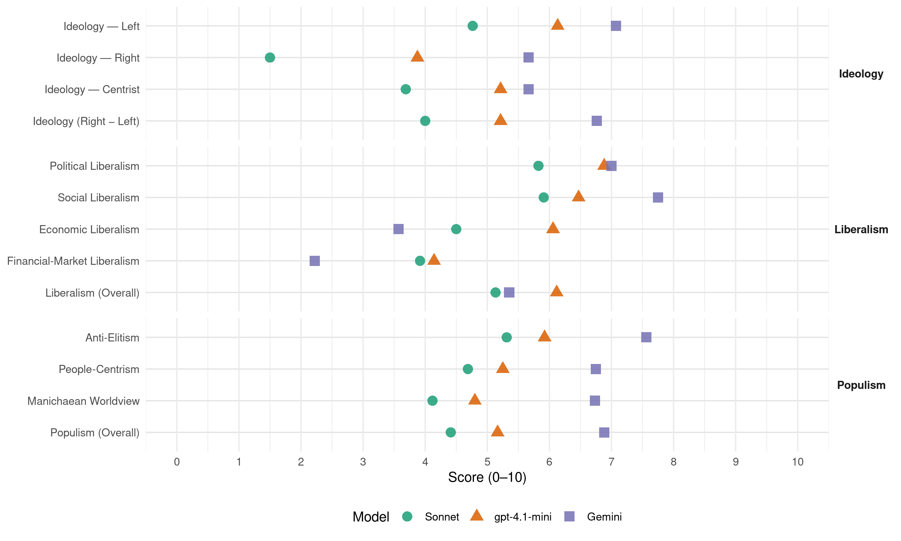

M5S (Italy, 2018)
manifesto_id 32956_201803
Get full text: This site shows derived annotations and short verbatim quotes only. The full manifesto text is © Manifesto Project / WZB — obtain it via manifesto-project.wzb.eu using the manifesto_id above.
Headline scores
| Dimension | Sonnet | gpt-4.1-mini | Gemini |
|---|---|---|---|
| Populism (Overall) | 4.4 | 5.2 | 6.9 |
| Anti-Elitism | 5.3 | 5.9 | 7.6 |
| People-Centrism | 4.7 | 5.2 | 6.8 |
| Manichaean Worldview | 4.1 | 4.8 | 6.7 |
| Ideology (Right − Left) | 4.0 | 5.2 | 6.8 |
| Liberalism (Overall) | 5.1 | 6.1 | 5.4 |
| Political Liberalism | 5.8 | 6.9 | 7.0 |
| Social Liberalism | 5.9 | 6.5 | 7.8 |
| Economic Liberalism | 4.5 | 6.1 | 3.6 |
| Financial-Market Liberalism | 3.9 | 4.1 | 2.2 |
Evidence per dimension
Economic Liberalism
Gemini · score 4.0 · verified · chunk 1
“mancato raggiungimento della sostenibilità ambientale”
Abbiamo considerato il mancato raggiungimento della sostenibilità ambientale che deve essere correlata alla valutazione
Gemini · score 4.0 · mixed · chunk 2
“ristabilirebbe una condizione di competizione sana sul mercato”
Questo finalmente ristabilirebbe una condizione di competizione sana sul mercato e, come è già successo ad esempio con l’azzeramento
Gemini · score 4.0 · mixed · chunk 3
“indurre il mercato a ottimizzare la produzione”
per far questo occorre indurre il mercato a ottimizzare la produzione di materia, investire in materia più facilmente
Gemini · score 2.0 · verified · chunk 4
“privatizzazione del servizio idrico e di altri servizi”
volti al tradimento del risultato referendario e alla privatizzazione del servizio idrico e di altri servizi pubblici essenziali
Gemini · score 3.0 · verified · chunk 5
“requisire temporaneamente, e per un periodo di norma non superiore a diciotto mesi, immobili non locati”
proponiamo che i Comuni siano autorizzati a requisire temporaneamente, e per un periodo di norma non superiore a diciotto mesi, immobili non locati da destinare ad uso abitativo
Gemini · score 5.0 · verified · chunk 6
“insediamento di attività produttive collegate”
agevolazioni e investimenti per rendere appetibile l’insediamento di attività produttive collegate alla residenzialità.
Gemini · score 5.0 · verified · chunk 7
“competitività su un mercato internazionale”
promuovendo le eccellenze italiane e la competitività su un mercato internazionale sempre più orientato al green
Gemini · score 2.0 · verified · chunk 8
“contro la privatizzazione di tutti i servizi”
Sì, non solo per l’acqua pubblica ma anche contro la privatizzazione di tutti i servizi essenziali
Gemini · score 4.0 · mixed · chunk 9
“esclusione da finanziamenti, incentivi e contributi pubblici”
responsabili di reati ambientali, prevedendo la loro esclusione da finanziamenti, incentivi e contributi pubblici nonché il divieto di partecipazione alle gare indette
Gemini · score 4.0 · verified · chunk 10
“disincentivi imposti sull’utilizzo dei combustibili fossili”
penetrazione dell’energia elettrica per soddisfare i consumi finali, anche tramite disincentivi imposti sull’utilizzo dei combustibili fossili, sempre calcolati
Gemini · score 4.0 · verified · chunk 11
“riduzione della pressione fiscale sul reddito”
Il MoVimento 5 Stelle s’impegnerà per una riduzione della pressione fiscale sul reddito delle persone fisiche attraverso la revisione
Gemini · score 4.0 · verified · chunk 12
“riduzione della pressione fiscale sul reddito”
Stelle s’impegnerà per una riduzione della pressione fiscale sul reddito delle persone fisiche attraverso
Gemini · score 3.0 · verified · chunk 13
“disincentivare la concorrenza tra istituti”
Incentivare la rete tra scuole e disincentivare la concorrenza tra istituti; Aumentare le ore laboratoriali
Gemini · score 3.0 · verified · chunk 14
“tendenza attuale verso il liberismo economico e commerciale”
mantenere alta la competitività. La tendenza attuale verso il liberismo economico e commerciale è visibile nei trattati di libero scambio
Gemini · score 3.0 · verified · chunk 15
“Ritiro dell’Italia dai negoziati TTIP e TiSA”
Promozione di accordi internazionali sugli appalti pubblici Ritiro dell’Italia dai negoziati TTIP e TiSA 3.1.2 Politica commerciale nazionale
Gemini · score 4.0 · verified · chunk 16
“distorsione del mercato non sostenibile”
allora è evidente che si è di fronte a una distorsione del mercato non sostenibile a lungo. E gli effetti in molti aeroporti
Gemini · score 4.0 · verified · chunk 17
“introdurre criteri più stringenti e rigorosi”
didattica online degli atenei pubblici, e introdurre criteri più stringenti e rigorosi per gli atenei telematici privati.
gpt-4.1-mini · score 6.0 · verified · chunk 1
“abolizione del pareggio di bilancio”
…Va subito abolito l’obbligo costituzionale del pareggio di bilancio, che è stato introdotto dai partiti sotto il Governo Monti… Deve essere il Parlamento italiano a decidere liberamente quando è il caso di stringere la cinghia e quando è il caso di investire per lo sviluppo…
gpt-4.1-mini · score 7.0 · verified · chunk 2
“responsabilità estesa del produttore, di prevenzione dei rifiuti e di gestione e riciclo post consumo”
proposta di legge modifica parte quarta dlgs 152/06: proposta di legge responsabilità estesa del produttore, di prevenzione dei rifiuti e di gestione e riciclo post consumo dei beni, nonché istituzione dell’Agenzia nazionale per il riciclo, per la realizzazione di un sistema di economia circolare:
gpt-4.1-mini · score 7.0 · verified · chunk 3
“investire in materia più facilmente riutilizzabile e riciclabile”
per far questo occorre indurre il mercato a ottimizzare la produzione di materia, investire in materia più facilmente riutilizzabile e riciclabile, con ciclo d vita più efficiente e minor impatto ambientale.
gpt-4.1-mini · score 3.0 · verified · chunk 4
“full cost recovery” appare assolutamente inadeguato a garantire l’ingente mole di investimenti”
Il “full cost recovery”, cioè il finanziamento del sistema e degli investimenti tramite tariffa, appare assolutamente inadeguato a garantire l’ingente mole di investimenti di cui il servizio idrico necessita. Infatti, anche i base a ciò che ci dicono i dati Istat, gli investimenti realizzati, almeno da 10 anni a questa parte, sono largamente insufficienti rispetto a quanto necessario e il loro tasso di realizzazione rispetto a quanto previsto è decisamente preoccupante.
gpt-4.1-mini · score 7.0 · verified · chunk 5
“riqualificazione energetica degli edifici… rilancio dell’edilizia”
…Meccanismi come l’eco-bonus, se stabilizzati almeno per 5 anni, possono portare a un elevato numero di assunzioni e ad un rilancio dell’edilizia. Sempre dati CRESME, ci dicono che questa misura consente un rientro di denaro per lo stato, maggiore di quello investito con la detrazione al 65%.
gpt-4.1-mini · score 7.0 · verified · chunk 6
“investimenti per rendere appetibile l’insediamento di attività produttive collegate alla residenzialità”
agevolazioni e investimenti per rendere appetibile l’insediamento di attività produttive collegate alla residenzialità. Inoltre la diffusione della banda larga collegata ad incentivi al telelavoro potrebbero far rinascere notevolmente queste realtà.
gpt-4.1-mini · score 7.0 · verified · chunk 7
“le aree protette occupano direttamente circa 4.000 lavoratori, oltre a 12.000 addetti impegnati nei servizi”
…Le aree protette occupano direttamente circa 4.000 lavoratori, oltre a 12.000 addetti impegnati nei servizi e nelle attività relative alla divulgazione e all’educazione ambientale, alla ricerca scientifica e soprattutto alla gestione…
gpt-4.1-mini · score 4.0 · verified · chunk 8
“privatizzazione dei servizi pubblici e vendita del patrimonio pubblico”
…business complessivo sui spl è di 150 miliardi. A cui il rapporto aggiunge 421 miliardi di valore del patrimonio pubblico in mano agli enti locali. Per un totale di business da fare in Italia -con privatizzazione dei servizi pubblici e vendita del patrimonio pubblico- pari 571 miliardi di euro!…
gpt-4.1-mini · score 7.0 · verified · chunk 9
“sostenere le centinaia e centinaia di micro, piccole e medie imprese locali”
La prevenzione territoriale è necessaria per creare lavoro, per permettere a filoni economico e produttivo di svilupparsi anche nei territori oggi più a rischio, per sostenere le centinaia e centinaia di micro, piccole e medie imprese locali, che anche nel sud stanno cercando di invertire la rotta, puntando su qualità ambientale e legalità.
gpt-4.1-mini · score 7.0 · verified · chunk 10
“mercato verso le tecnologie alternative”
Il passaggio verso questo sistema, fondato esclusivamente sulle FER, richiederà un notevole sforzo per orientare il mercato verso le tecnologie alternative. Tuttavia, se pianificato con largo anticipo, questo processo potrà avvenire a costi ragionevoli, sfruttando, per quanto possibile, l’occasione presentata dall’obsolescenza tecnica degli apparati esistenti e i grandi cambiamenti in corso in tutti i settori produttivi dell’economia.
gpt-4.1-mini · score 6.0 · verified · chunk 11
“Il MoVimento 5 Stelle s’impegnerà per una riduzione della pressione fiscale sul reddito delle persone fisiche attraverso la revisione degli scaglioni IRPEF privilegiando”
Punto programmatico Il MoVimento 5 Stelle s’impegnerà per una riduzione della pressione fiscale sul reddito delle persone fisiche attraverso la revisione degli scaglioni IRPEF privilegiando, nell’ottica di redistribuzione della ricchezza, le fasce di contribuenti medio-basse, i nuclei familiari monoreddito e con più componenti e le diversità territoriali del Paese.
gpt-4.1-mini · score 5.0 · verified · chunk 12
“riduzione della pressione fiscale sul reddito”
Il MoVimento 5 Stelle s’impegnerà per una riduzione della pressione fiscale sul reddito delle persone fisiche attraverso la revisione degli scaglioni IRPEF privilegiando, nell’ottica di redistribuzione della ricchezza.
gpt-4.1-mini · score 6.0 · verified · chunk 13
“Garantire maggiori risorse e migliorare l’allocazione di quelle già destinate, favorendo un’istruzione pubblica adeguata e con elevati standard qualitativi”
Intendiamo quindi assicurare maggiori risorse e migliorare l’allocazione di quelle già destinate, favorendo un’istruzione pubblica adeguata e con elevati standard qualitativi, senza costringere i genitori ad una diretta partecipazione economica per assicurare il regolare svolgimento delle normali attività scolastiche, sia curriculari che extracurriculari.
gpt-4.1-mini · score 6.0 · verified · chunk 14
“Semplificazione per l’avvio dell’inchieste, e delle relative azioni, sui fenomeni “Antidumping” e “Antisussidi””
Al fine di evitare effetti nefasti e insostenibili economicamente, ambientalmente e socialmente gli impegni del prossimo governo italiano a Bruxelles “pretenderà” le seguenti azioni: Semplificazione per l’avvio dell’inchieste, e delle relative azioni, sui fenomeni “Antidumping” e “Antisussidi”, assicurando nel contempo un maggiore accesso alle risultanze delle inchieste.
gpt-4.1-mini · score 7.0 · verified · chunk 15
“Il M5S vuole creare un sistema commerciale basato sulle regole, che consenta di esportare e importare beni e servizi”
Il M5S vuole creare un sistema commerciale basato sulle regole, che consenta di esportare e importare beni e servizi, garantendo adeguati standard di sicurezza per i cittadini, senza penalizzare le PMI e senza creare guerre tra poveri.
gpt-4.1-mini · score 6.0 · verified · chunk 16
“favorire lo sviluppo di tali fenomeni quando consentono di democratizzare il mondo del credito”
…Come MoVimento 5 Stelle pensiamo che non solo non si debba avere un atteggiamento pregiudiziale verso l’irrompere delle nuove tecnologie in settori tradizionali come il mondo bancario e finanziario ma anzi occorra favorire lo sviluppo di tali fenomeni quando gli stessi consentono di democratizzare il mondo del credito e favorire…
gpt-4.1-mini · score 5.0 · verified · chunk 17
“incrementare le risorse destinate a finanziare le università”
…In un periodo di crisi così profondo come l’attuale, in cui la competizione tra Stati è fortemente condizionata anche dalla ricerca e dall’innovazione tecnologica, è necessario rispondere con un cospicuo incremento delle risorse destinate al Fondo di Finanziamento Ordinario.
Sonnet · score 5.0 · verified · chunk 1
“burocrazia non semplificata costituisce un enorme vincolo”
La burocrazia non semplificata costituisce un enorme vincolo allo sviluppo delle imprese, alla concorrenza, alle imprese che vorrebbero investire in Italia.
Sonnet · score 4.0 · verified · chunk 2
“semplificazione e della compatibilità tra attività produttive”
Le misure introdotte sul fronte della semplificazione e della compatibilità tra attività produttive e bonifiche hanno avviato il processo di riforma della materia
Sonnet · score 3.0 · verified · chunk 4
“il mantra dell’efficienza del privato e del mercato non regge”
D’altra parte i fautori del mercato continuano a mistificare la realtà… il mantra dell’efficienza del privato e del mercato non regge
Sonnet · score 4.0 · mixed · chunk 5
“non hanno le risorse per accedere al libero mercato”
massacrate dalla crisi economica, non hanno le risorse per accedere al libero mercato della locazione. Per questo proponiamo che venga attivato un censimento
Sonnet · score 6.0 · verified · chunk 6
“detrazioni fiscali del 65% previste dall’attuale disciplina dell’ecobonus”
La nostra proposta prevede che tutti questi interventi ed altri considerati utili al fine del recupero delle acque meteoriche potranno godere delle detrazioni fiscali del 65% previste dall’attuale disciplina dell’ecobonus
Sonnet · score 6.0 · verified · chunk 7
“competitività su un mercato internazionale”
promuovendo le eccellenze italiane e la competitività su un mercato internazionale sempre più orientato al green
Sonnet · score 3.0 · verified · chunk 8
“riduzione della gestione pubblica ai soli casi”
veniva chiaramente indicato fra gli obiettivi a breve termine, ‘la riduzione della gestione pubblica ai soli casi di stretta necessità’
Sonnet · score 5.0 · mixed · chunk 9
“libero mercato”
la Pubblica Amministrazione non lavora nel libero mercato, non è un’azienda, ma talvolta gli strumenti utilizzati
Sonnet · score 5.0 · mixed · chunk 10
“orientare il mercato verso le tecnologie alternative”
Il passaggio verso questo sistema, fondato esclusivamente sulle FER, richiederà un notevole sforzo per orientare il mercato verso le tecnologie alternative. Tuttavia, se pianificato con largo anticipo, questo processo potrà avvenire a costi ragionevoli
Sonnet · score 4.0 · verified · chunk 11
“globalizzazione neoliberale, che ha come unico fine”
Quello che sta tramontando è la globalizzazione “neoliberale”, che ha come unico fine quello di aumentare il profitto di pochissime multinazionali e che porta con sé miseria, fame, guerre
Sonnet · score 5.0 · mixed · chunk 12
“riduzione della pressione fiscale”
Il MoVimento 5 Stelle s’impegnerà per una riduzione della pressione fiscale sul reddito delle persone fisiche attraverso la revisione degli scaglioni IRPEF privilegiando, nell’ottica di redistribuzione della ricchezza, le fasce di contribuenti medio-basse
Sonnet · score 4.0 · mixed · chunk 13
“sburocratizzazione e la riduzione degli oneri fiscali”
da un lato è necessario favorire la nascita e la crescita di nuove imprese attraverso la sburocratizzazione e la riduzione degli oneri fiscali, dall’altro è fondamentale diffondere conoscenza
Sonnet · score 4.0 · mixed · chunk 14
“eliminare burocrazia e oneri per le imprese”
vuole sin da subito abolire le barriere che oggi limitano la nascita e lo sviluppo delle idee innovative, da una parte andando a eliminare burocrazia e oneri per le imprese, specie nei primi anni di attività
Sonnet · score 4.0 · mixed · chunk 15
“abolizione delle liberalizzazioni introdotte dal Governo Monti”
Si provvede quindi all’abolizione delle liberalizzazioni introdotte dal Governo Monti con il ripristino della situazione precedente
Sonnet · score 5.0 · mixed · chunk 16
“rendere il mercato unico più competitivo”
come rendere il mercato unico più competitivo rimuovendo o attenuando le barriere all’ingresso come trovare un bilanciamento tra circolazione dei dati, trasparenza, sicurezza e privacy
Sonnet · score 5.0 · verified · chunk 17
“incentivando gli enti privati affinché possano contribuire”
Il MoVimento 5 Stelle ritiene necessario potenziare la ricerca attraverso maggiori finanziamenti pubblici, incentivando gli enti privati affinché possano contribuire in maniera determinante all’innovazione
Financial-Market Liberalism
Gemini · score 2.0 · verified · chunk 5
“proprietà di Istituti bancari, enti privati, società immobiliari”
Gli immobili dovranno essere individuati nell’ambito delle abitazioni e degli edifici sfitti e inutilizzati da almeno due anni: di proprietà di Istituti bancari, enti privati, società immobiliari
Gemini · score 1.0 · verified · chunk 8
“al solo scopo di estrarre valore finanziario”
vi entrino, in realtà, al solo scopo di estrarre valore finanziario, sia in termini di dividendi
Gemini · score 2.0 · verified · chunk 9
“separazione tra banche d’affari che speculano”
vuole tornare a un sistema bancario in cui operi una netta separazione tra banche d’affari che speculano sull’economia finanziaria e banche commerciali
Gemini · score 2.0 · verified · chunk 11
“smantellamento del MES (Fondo”Salva Stati”)“
In particolare, ci impegneremo allo smantellamento del MES (Fondo “Salva Stati”) e della cosiddetta “Troika”.
Gemini · score 2.0 · verified · chunk 12
“basata sulle leggi della finanza speculativa”
L’integrazione economica non deve essere basata sulle leggi della finanza speculativa. Devono essere differenziati
Gemini · score 1.0 · verified · chunk 13
“leggi criminogene che hanno privatizzato le banche”
dopo trenta anni di benessere, è stata costantemente violata a causa di leggi criminogene che hanno privatizzato le banche, le industrie, i territori
Gemini · score 2.0 · verified · chunk 14
“banca centrale sarebbe vincolata ad acquistare quella parte”
attraverso la Banca d’Italia. Quest’ultima, naturalmente, dovrebbe tornare sotto il controllo del Tesoro… La nostra banca centrale sarebbe vincolata ad acquistare quella parte di titoli di Stato invenduta
Gemini · score 2.0 · verified · chunk 15
“vincoli imposti da Basilea III”
difficoltà di avere accesso al credito, a causa dei vincoli imposti da Basilea III. Nel caso dell’Italia, questo assume una connotazione ancora più negativa
Gemini · score 6.0 · verified · chunk 16
“regolamentazione, anche minima, del Fintech”
mondo che sta cambiando per poi approntare una regolamentazione, anche minima, del Fintech a tutela degli interessi incisi
gpt-4.1-mini · score 5.0 · mixed · chunk 1
“riforma delle autorità amministrative indipendenti”
…Modifica dei criteri di nomina delle autorità amministrative indipendenti… garantire “una maggiore imparzialità/neutralità rispetto agli interessi coinvolti”… nomine di alcuni membri dell’Antitrust… carenza di “notoria indipendenza”…
gpt-4.1-mini · score 2.0 · verified · chunk 7
“la proposta di legge… consta di ventinove articoli, che in gran parte modificano la legge quadro sulle aree protette”
…la proposta di legge, che è stata approvata dal Senato nella seduta del 10 novembre 2016 in un testo risultante dall’unificazione degli Atti Senato nn. 119, 1004, 1034, 1931 e 2012) consta di ventinove articoli, che in gran parte modificano la legge quadro sulle aree protette…
gpt-4.1-mini · score 3.0 · verified · chunk 8
“quotazione in Borsa segna la distanza definitiva”
…La quotazione in Borsa segna la distanza definitiva tra il modello della gestione delle municipalizzate, legate all’erogazione dei servizi e radicate al territorio di riferimento, e le nuove aziende, legate alla valorizzazione finanziaria e proiettate nella competizione internazionale…
gpt-4.1-mini · score 5.0 · verified · chunk 9
“riforma della vigilanza bancaria e finanziaria in Italia”
Il MoVimento 5 Stelle vuole dare alla vigilanza bancaria e finanziaria nuovi metodi e strumenti più condivisi ed efficaci, ispirati a maggiore trasparenza, condivisione e responsabilità, allo scopo di garantire la sicurezza e tutela del risparmio.
gpt-4.1-mini · score 6.0 · verified · chunk 11
“Il MoVimento 5 Stelle si opporrà in ogni modo a tutti quei ricatti dei mercati e della finanza internazionale travestiti da”riforme”“
Punto programmatico Il MoVimento 5 Stelle si opporrà in ogni modo a tutti quei ricatti dei mercati e della finanza internazionale travestiti da “riforme”. In particolare, ci impegneremo allo smantellamento del MES (Fondo “Salva Stati”) e della cosiddetta “Troika”. Combatteremo in ogni sede possibile le pratiche oggi utilizzate dalle multinazionali per eludere il fisco mediante “triangolazioni internazionali”. Lavoreremo, infine, per la riforma dell’architettura finanziaria internazionale e a, tal fine, aumenteremo la cooperazione con tutti quegli organismi, come il G77 più Cina, che si impegnano in questa direzione.
gpt-4.1-mini · score 3.0 · verified · chunk 12
“contrasterà tutti quei trattati che l’Unione Europea sta negoziando”
Il Movimento 5 Stelle contrasterà tutti quei trattati che l’Unione Europea sta negoziando nel mondo (come il TTIP e il CETA) che mettono a rischio i diritti dei lavoratori, i diritti sociali, la preservazione dell’ambiente.
gpt-4.1-mini · score 4.0 · verified · chunk 13
“rivedere il Trattato di Maastricht, di Lisbona e il cosiddetto fiscal compact, i quali vincolano lo sviluppo economico”
Si tratta altresì di riprendere in esame il Trattato di Maastricht, di Lisbona e il cosiddetto fiscal compact, i quali vincolano lo sviluppo economico e impongono, come ampiamente sottolineato anche da Cristine Lagarde, che noi riducessimo il debito “accelerando e frenando nello stesso tempo”.
gpt-4.1-mini · score 6.0 · verified · chunk 16
“la Commissione europea ha lanciato una consultazione pubblica su come incrementare l’accesso ai servizi finanziari”
…la Commissione europea nel marzo di quest’anno ha lanciato, una consultazione pubblica incentrata sulle seguenti questioni come incrementare l’accesso per consumatori e imprese ai servizi finanziari; come abbassare i costi operativi ed aumentare l’efficienza dei servizi; come rendere il mercato unico più competitivo…
Sonnet · score 6.0 · verified · chunk 1
“vigilanza sui mercati azionari”
la vigilanza sui mercati azionari, che di recente ha avuto ricadute dirette sui piccoli risparmiatori
Sonnet · score 3.0 · verified · chunk 4
“finanziarizzazione dei beni comuni”
una generalizzata privatizzazione e finanziarizzazione dei beni comuni, con forti conseguenze sull’ambiente e sugli ecosistemi
Sonnet · score 3.0 · verified · chunk 5
“una truffa delle banche o delle assicurazioni”
per i precari cui non vengono concessi i mutui, per chi ha subito licenziamenti in età lavorativa avanzata o una truffa delle banche o delle assicurazioni
Sonnet · score 5.0 · verified · chunk 7
“imposta municipale propria”
assoggettando le piattaforme petrolifere all’imposta municipale propria (IMU)… inserimento nel catasto e il pagamento dell’imposta municipale propria per le piattaforme petrolifere
Sonnet · score 3.0 · verified · chunk 8
“finanziarizzazione dei servizi e alla loro redditività”
Si va verso il tentativo di ‘costruire’ un mercato dei servizi pubblici locali…totalmente orientato alla progressiva finanziarizzazione dei servizi e alla loro redditività economica.
Sonnet · score 4.0 · mixed · chunk 9
“separazione tra banche d’affari che speculano”
netta separazione tra banche d’affari che speculano sull’economia finanziaria e banche commerciali
Sonnet · score 5.0 · verified · chunk 10
“sarà favorita la creazione di strumenti finanziari utili”
saranno introdotte regole certe per garantire l’autoproduzione e l’autoconsumo di energia rinnovabile, così come sarà favorita la creazione di strumenti finanziari utili a garantire a tutti la possibilità di utilizzarle
Sonnet · score 3.0 · verified · chunk 11
“ricatti dei mercati e della finanza internazionale”
Il MoVimento 5 Stelle si opporrà in ogni modo a tutti quei ricatti dei mercati e della finanza internazionale travestiti da “riforme”
Sonnet · score 3.0 · verified · chunk 12
“leggi della finanza speculativa”
L’integrazione economica non deve essere basata sulle leggi della finanza speculativa. Devono essere differenziati i trattamenti in base al diverso livello di sviluppo delle varie economie dei Paesi.
Sonnet · score 3.0 · verified · chunk 13
“la BCE può dare denaro solo alle Banche”
rivedere le politiche comunitarie che vietano talvolta l’intervento dello Stato e secondo cui la BCE può dare denaro solo alle Banche
Sonnet · score 3.0 · verified · chunk 14
“tornare sotto il controllo del Tesoro”
Quest’ultima, naturalmente, dovrebbe tornare sotto il controllo del Tesoro, in modo che la politica fiscale e quella monetaria seguano un indirizzo coerente. La nostra banca centrale sarebbe vincolata ad acquistare quella parte di titoli di Stato invenduta sul mercato.
Sonnet · score 4.0 · verified · chunk 15
“difficoltà di avere accesso al credito, a causa dei vincoli imposti da Basilea III”
restano ancorate, negli Stati Uniti ma ancora più in Italia, alla difficoltà di avere accesso al credito, a causa dei vincoli imposti da Basilea III.
Sonnet · score 6.0 · verified · chunk 16
“inclusione finanziaria”
occorra favorire lo sviluppo di tali fenomeni quando gli stessi consentono di democratizzare il mondo del credito e favorire, sotto questo profilo, l’inclusione finanziaria
Political Liberalism
Gemini · score 8.0 · verified · chunk 1
“Difesa dei valori della Costituzione dagli assalti antidemocratici”
elaborato la nostra proposta in questo delicato e essenziale ambito. Difesa dei valori della Costituzione dagli assalti antidemocratici che mirano a stravolgerla
Gemini · score 7.0 · verified · chunk 2
“garantendo trasparenza dei dati e partecipazione dei cittadini”
salvaguardando i controlli, sanando le attuali lacune normative e garantendo trasparenza dei dati e partecipazione dei cittadini.
Gemini · score 6.0 · verified · chunk 3
“trasparenza e pubblicazione on line di tutte le informazioni”
tracciabilità dei rifiuti raccolti; trasparenza e pubblicazione on line di tutte le informazioni riguardanti la filiera, inclusi i dettagli
Gemini · score 7.0 · verified · chunk 4
“diritti civili garantiti dalla Costituzione”
prevede, attraverso l’articolo 5, l’abolizione dei diritti civili garantiti dalla Costituzione, togliendo alle famiglie in occupazione
Gemini · score 7.0 · verified · chunk 5
“la Costituzione mette al primo posto l’interesse collettivo”
non scordando però che la Costituzione mette al primo posto l’interesse collettivo e non quello privato
Gemini · score 5.0 · verified · chunk 6
“politiche dei Governi nazionale e regionali”
possibilità dell’esistenza di una diversa concezione di benessere, diversa da quella che le politiche dei Governi nazionale e regionali hanno perseguito
Gemini · score 6.0 · verified · chunk 7
“potere dello Stato resta virtuale”
delle vere e proprie zone franche dove il potere dello Stato resta virtuale, mentre quello concreto dei comuni
Gemini · score 7.0 · verified · chunk 8
“garanzia dei diritti fondamentali essenziali”
riconosce come prioritaria la garanzia dei diritti fondamentali essenziali rispetto al pareggio di bilancio
Gemini · score 8.0 · verified · chunk 9
“iniziative di democrazia partecipata”
Per realizzare questo obiettivo, si possono intraprendere iniziative di democrazia partecipata che diano voce alla cittadinanza che vive in
Gemini · score 6.0 · verified · chunk 10
“I cittadini dovranno essere coinvolti tramite dibattito pubblico”
In ogni fase i cittadini dovranno essere coinvolti tramite dibattito pubblico. Il sistema energetico, comprensivo delle
Gemini · score 7.0 · verified · chunk 11
“ruolo di controllo costante su tutto questo”
Chiediamo che il Parlamento abbia un ruolo di controllo costante su tutto questo e che punti alla tutela dell’ambiente
Gemini · score 8.0 · verified · chunk 12
“separazione dei poteri Tra giustizia e politica”
PROGRAMMA GIUSTIZIA Magistratura e politica separazione dei poteri Tra giustizia e politica non ci deve essere
Gemini · score 7.0 · verified · chunk 13
“rispettare quanto sancito dalla nostra Costituzione”
garantire il suo funzionamento, così da rispettare quanto sancito dalla nostra Costituzione. Intendiamo quindi assicurare maggiori risorse
Gemini · score 8.0 · verified · chunk 14
“garantire il diritto di ogni cittadino alla mobilità”
Garantire il diritto di ogni cittadino alla mobilità è espressamente riconosciuto nel nostro ordinamento dall’art. 16 della Costituzione.
Gemini · score 7.0 · verified · chunk 15
“per chiedere il parere del popolo”
l’articolo 75 della Costituzione lo vieta. E’ falso, per chiedere il parere del popolo si può infatti ricorrere ad un “referendum consultivo”.
Gemini · score 8.0 · verified · chunk 16
“partecipazione alla vita democratica”
comunicare informazioni, nonché la loro partecipazione alla vita democratica sono sempre maggiormente dipendenti dall’accessibilità
Gemini · score 7.0 · verified · chunk 17
“trasparenza e la buona gestione amministrativa”
costo standard di ateneo, ma nulla è stato previsto sulla trasparenza e la buona gestione amministrativa che, con i mezzi informatici
gpt-4.1-mini · score 8.0 · verified · chunk 1
“Difesa dei valori della Costituzione”
…Difesa dei valori della Costituzione dagli assalti antidemocratici che mirano a stravolgerla, semplificazione, partecipazione, democrazia diretta, miglioramento del rapporto tra cittadini e istituzioni, trasparenza…
gpt-4.1-mini · score 7.0 · verified · chunk 2
“Ministero dell’ambiente e della tutela del territorio e del mare”
istituzione di un tavolo tecnico permanente, che funga da cabina di regia, presso il Ministero dell’ambiente e per la tutela del territorio e del mare nel quale siano coinvolte le associazioni e i comitati di cittadini da anni impegnati nelle lotte a difesa del territorio,
gpt-4.1-mini · score 7.0 · verified · chunk 3
“trasparenza e pubblicazione on line di tutte le informazioni riguardanti la filiera”
criterio dell’offerta economicamente più vantaggiosa (no massimo ribasso); nessuna proprietà diretta o indiretta di impianti di trattamento e/o smaltimento rifiuti; possesso di un sistema di pesatura alla fonte e tracciabilità dei rifiuti raccolti; trasparenza e pubblicazione on line di tutte le informazioni riguardanti la filiera, inclusi i dettagli dei costi e dei ricavi.
gpt-4.1-mini · score 3.0 · verified · chunk 4
“diritto umano all’acqua, come hanno già fatto diversi Paesi”
La prima e forse migliore riforma costituzionale che andrebbe approvata è proprio quella che prevede di inserire nella prima parte della Costituzione il diritto umano all’acqua, come hanno già fatto diversi Paesi tra cui (il primo in Europa) la Slovenia alla fine del 2016.
gpt-4.1-mini · score 7.0 · verified · chunk 5
“la Costituzione mette al primo posto l’interesse collettivo e non quello privato”
…non scordando però che la Costituzione mette al primo posto l’interesse collettivo e non quello privato e che quindi in nome di un interesse pubblico si può variare la pianificazione territoriale definendo edificabili o meno i terreni a seconda della contingenza.
gpt-4.1-mini · score 7.0 · verified · chunk 6
“la legge 183/1989 che anticipava di circa vent’anni il completo processo di salvaguardia dei bacini idrografici”
La legge 183/1989 che anticipava di circa vent’anni il completo processo di salvaguardia dei bacini idrografici, previsti dalle direttiva europee sulle acque con i loro piani di gestione. L’iter di questa legge fu comunque lungo e travagliato.
gpt-4.1-mini · score 8.0 · verified · chunk 7
“la legge quadro sulle aree protette… ne detta le procedure di gestione, di elezione degli organi di rappresentanza”
…la legge quadro la 394 del 1991 attualmente in corso di revisione attraverso una proposta votata al Senato e ora in discussione in Commissione alla Camera. La legge che regolamenta l’istituzione delle aree protette di ogni livello e ne detta le procedure di gestione, di elezione degli organi di rappresentanza ecc……
gpt-4.1-mini · score 7.0 · verified · chunk 8
“garantire la trasparenza e partecipate”
…servizi siano garantiti a tutti, a costi sostenibili, sottoposti a scelte trasparenti e partecipate, che inneschino nella società meccanismi di cooperazione, solidarietà…
gpt-4.1-mini · score 7.0 · verified · chunk 9
“legge 68/2015, primi segnali di una inversione di tendenza”
Il business dell’ecomafiaè di 19,1 miliardi, in calo rispetto al rapporto 2015, anche grazie all’introduzione della legge 68/2015, primi segnali di una inversione di tendenza, dopo l’introduzione della legge sui delitti ambientali nel codice penale e un’azione più repressiva ed efficace,
gpt-4.1-mini · score 7.0 · verified · chunk 10
“coinvolti tramite dibattito pubblico”
In ogni fase i cittadini dovranno essere essere coinvolti tramite dibattito pubblico. 28 http://leg16.camera.it/465?area=17&tema=151&Strategia+energetica+nazionale e successivi Aggiornamenti Il sistema energetico, comprensivo delle infrastrutture, le reti, l’organizzazione e i mercati, dovrà affrontare cambiamenti anche molto profondi: dall’attuale modello “centralizzato” si dovrà compiere il passaggio alla generazione distribuita, in cui non solo i sistemi di trasformazione, ma anche le stesse fonti di energia si troveranno il più vicino possibile al punto di consumo.
gpt-4.1-mini · score 7.0 · verified · chunk 11
“È fondamentale applicare in modo rigoroso il dettame dell’art 11 della Costituzione italiana e riconoscere il diritto alla pace”
Le lobby dell’industria militare e i governi collusi sono gli unici a guadagnare da tutto questo. È fondamentale applicare in modo rigoroso il dettame dell’art 11 della Costituzione italiana e riconoscere il diritto alla pace, come diritto irrinunciabile e inalienabile di tutti i popoli della Terra, considerare reato internazionale la guerra di aggressione e di conquista e riconoscere il diritto delle popolazioni aggredite ad essere risarcite dal Paese o dai Paesi aggressori.
gpt-4.1-mini · score 7.0 · verified · chunk 12
“La giustizia è al servizio dei cittadini”
Nel programma del MoVimento 5 Stelle la giustizia è al servizio dei cittadini e tutti gli interventi in questa importantissima materia non saranno più finalizzati a tagliare e spuntare le armi, ma a migliorare l’efficienza e la qualità della giustizia.
gpt-4.1-mini · score 7.0 · verified · chunk 13
“Lo Stato è il Popolo sovrano, e il benessere dei cittadini riflette direttamente il progresso e lo sviluppo della società”
Lo Stato è il Popolo sovrano, e il benessere dei cittadini riflette direttamente il progresso e lo sviluppo della società. Il pensiero da contrastare è quello del neoliberismo spinto secondo il quale non conta la comunità ma rileva soltanto il singolo individuo, il quale deve essere auto imprenditore, perseguire il massimo profitto, e fare in modo che la ricchezza sia accentrata nelle mani di pochi.
gpt-4.1-mini · score 7.0 · verified · chunk 14
“Il diritto alla mobilità è il principio base della continuità territoriale che, se non garantita dall’accessibilità al necessario numero di voli e alla diversificazione delle rotte, determina conseguenze pesanti nella vita dei singoli”
Garantire il diritto di ogni cittadino alla mobilità è espressamente riconosciuto nel nostro ordinamento dall’art. 16 della Costituzione. La continuità territoriale, intesa come capacità di garantire un servizio di trasporto che non penalizzi cittadini residenti in territori meno favoriti, si inserisce nel quadro più generale di garanzia dell’uguaglianza sostanziale dei cittadini e di coesione di natura economica e sociale, promosso in sede europea.
gpt-4.1-mini · score 8.0 · verified · chunk 15
“Il domicilio digitale è un luogo virtuale, accessibile mediante gli strumenti informatici disponibili, volto a promuovere ed a facilitare la comunicazione digitale tra pubbliche amministrazioni e cittadini”
All’articolo 3-bis del codice dell’amministrazione digitale di cui al decreto legislativo 7 marzo 2005, n. 82, sono apportate le seguenti modificazioni: a) il comma 1 è sostituito dal seguente: «1. Il domicilio digitale è un luogo virtuale, accessibile mediante gli strumenti informatici disponibili, volto a promuovere ed a facilitare la comunicazione digitale tra pubbliche amministrazioni e cittadini.
gpt-4.1-mini · score 7.0 · verified · chunk 16
“la”net neutrality” è un prerequisito necessario e indispensabile per la libertà d’espressione”
…La “net neutrality” è un prerequisito necessario e indispensabile per la libertà d’espressione, sancita dall’articolo 10 della Convenzione Europea per la salvaguardia dei diritti dell’uomo e delle libertà fondamentali. Collegare il diritto di accesso ad Internet al principio di neutralità della Rete…
gpt-4.1-mini · score 6.0 · verified · chunk 17
“la legge 240/2010, cosiddetta riforma Gelmini, ha introdotto la revisione di numerosi aspetti organizzativi e funzionali delle università”
…La legge 240/2010, cosiddetta riforma Gelmini, ha introdotto la revisione di numerosi aspetti organizzativi e funzionali delle università. Con il fine di garantire livelli di efficienza e efficacia più elevati, attraverso meccanismi di competitività interna, vincoli sul reclutamento del personale, criteri di accreditamento dei corsi di laurea più severi e rottamazione della figura del ricercatore a tempo indeterminato, è stato ridisegnato il sistema di governo delle università statali…
Sonnet · score 8.0 · verified · chunk 1
“Difesa dei valori della Costituzione dagli assalti antidemocratici”
Difesa dei valori della Costituzione dagli assalti antidemocratici che mirano a stravolgerla, semplificazione, partecipazione, democrazia diretta
Sonnet · score 6.0 · verified · chunk 2
“trasparenza e partecipazione del pubblico”
nonchè modalità per garantire trasparenza e partecipazione del pubblico attraverso la trasmissione di osservazioni ai piani
Sonnet · score 6.0 · verified · chunk 3
“totale trasparenza, comprensibilità e sollecitudine”
dovrebbe essere effettuata utilizzando criteri di totale trasparenza, comprensibilità e sollecitudine
Sonnet · score 5.0 · verified · chunk 4
“garantire la trasparenza e la partecipazione”
per garantire la trasparenza e la partecipazione nella gestione dei servizi
Sonnet · score 6.0 · verified · chunk 5
“la Costituzione mette al primo posto l’interesse collettivo”
non scordando però che la Costituzione mette al primo posto l’interesse collettivo e non quello privato e che quindi in nome di un interesse pubblico si può variare la pianificazione territoriale
Sonnet · score 6.0 · verified · chunk 6
“ruolo prevalentemente tecnico e non puramente politico”
con il fine di ripristinare un ruolo prevalentemente tecnico e non puramente politico al Commissario. Il nuovo commissario dovrà, quindi, poter gestire gli interventi
Sonnet · score 6.0 · verified · chunk 7
“articolo 118 della Costituzione”
ha creato una palese violazione dell’articolo 118 della Costituzione che riconosce a comuni, province e città metropolitane la titolarità di funzioni amministrative proprie
Sonnet · score 5.0 · verified · chunk 8
“principi di trasparenza, onestà e tutela del cittadino”
svincolandolo dal potere politico e vincolandolo a principi di trasparenza, onestà e tutela del cittadino.
Sonnet · score 6.0 · verified · chunk 9
“principi costituzionali”
nel rispetto dei principi costituzionali e di un’auspicata nuova normativa sulla dirigenza pubblica
Sonnet · score 6.0 · verified · chunk 10
“i cittadini dovranno essere coinvolti tramite dibattito pubblico”
Il piano disciplina anche i livelli di perequazione energetica tra le aree assegnando i vari target. Questo strumento avrà il compito di indirizzare il cambiamento e dovrà comunque vedere l’accordo degli Enti Territoriali. In ogni fase i cittadini dovranno essere essere coinvolti tramite dibattito pubblico.
Sonnet · score 5.0 · verified · chunk 11
“La democrazia è divenuta oggetto di trattazione”
La democrazia è divenuta oggetto di trattazione delle organizzazioni finanziarie. Se prendiamo consapevolezza del fatto che la partita non è giocata tra Stati membri e istituzioni europee
Sonnet · score 6.0 · verified · chunk 12
“separazione dei poteri”
Magistratura e politica separazione dei poteri. Tra giustizia e politica non ci deve essere alcun tipo di contaminazione. Si tratta di ruoli differenti che esercitano poteri autonomi dello Stato
Sonnet · score 5.0 · verified · chunk 13
“un presidio di legalità, inclusione e integrazione”
Vogliamo rendere la scuola un luogo magnifico di crescita, di incontro, un’officina di creatività e sperimentazione, un presidio di legalità, inclusione e integrazione, una sentinella del territorio.
Sonnet · score 5.0 · verified · chunk 14
“minacciato le fondamenta stessa della democrazia”
Essa ha, infine, minacciato le fondamenta stessa della democrazia. E’ per questo che occorre puntare alla localizzazione, dalla globalizzazione
Sonnet · score 6.0 · verified · chunk 15
“Istituzione di una commissione parlamentare di inchiesta”
Istituzione, ai sensi dell’articolo 82 della Costituzione, di una Commissione parlamentare di inchiesta sulle attività illecite collegate alla produzione italiana di armamenti
Sonnet · score 6.0 · verified · chunk 16
“indipendenza dall’organo politico”
resta soltanto una carta da giocare: l’indipendenza dall’organo politico. E per essere indipendente non può più essere governata con le leggi che si succedono da decenni
Sonnet · score 6.0 · verified · chunk 17
“senza aver effettivamente verificato le loro reali capacità”
apportando i necessari correttivi alla disciplina del numero chiuso per impedire l’esclusione degli studenti senza aver effettivamente verificato le loro reali capacità
Liberalism (Overall)
Gemini · score 6.0 · verified · chunk 1
“Difesa dei valori della Costituzione dagli assalti antidemocratici”
elaborato la nostra proposta in questo delicato e essenziale ambito. Difesa dei valori della Costituzione dagli assalti antidemocratici che mirano a stravolgerla
Gemini · score 6.0 · verified · chunk 2
“garantendo trasparenza dei dati e partecipazione dei cittadini”
salvaguardando i controlli, sanando le attuali lacune normative e garantendo trasparenza dei dati e partecipazione dei cittadini.
Gemini · score 5.0 · verified · chunk 3
“trasparenza e pubblicazione on line di tutte le informazioni”
tracciabilità dei rifiuti raccolti; trasparenza e pubblicazione on line di tutte le informazioni riguardanti la filiera, inclusi i dettagli
Gemini · score 6.0 · verified · chunk 4
“diritti civili garantiti dalla Costituzione”
prevede, attraverso l’articolo 5, l’abolizione dei diritti civili garantiti dalla Costituzione, togliendo alle famiglie in occupazione
Gemini · score 5.0 · verified · chunk 5
“la Costituzione mette al primo posto l’interesse collettivo”
non scordando però che la Costituzione mette al primo posto l’interesse collettivo e non quello privato
Gemini · score 5.0 · verified · chunk 6
“insediamento di attività produttive collegate”
agevolazioni e investimenti per rendere appetibile l’insediamento di attività produttive collegate alla residenzialità.
Gemini · score 6.0 · verified · chunk 7
“dichiarazione universale dei diritti umani”
libertà di mobilità e di migrazione prevista dalla dichiarazione universale dei diritti umani, e quindi per contrastare
Gemini · score 3.0 · verified · chunk 8
“contro la privatizzazione di tutti i servizi”
Sì, non solo per l’acqua pubblica ma anche contro la privatizzazione di tutti i servizi essenziali
Gemini · score 6.0 · verified · chunk 9
“separazione tra banche d’affari che speculano”
vuole tornare a un sistema bancario in cui operi una netta separazione tra banche d’affari che speculano sull’economia finanziaria e banche commerciali
Gemini · score 5.0 · verified · chunk 10
“I cittadini dovranno essere coinvolti tramite dibattito pubblico”
In ogni fase i cittadini dovranno essere coinvolti tramite dibattito pubblico. Il sistema energetico, comprensivo delle
Gemini · score 5.0 · verified · chunk 11
“riduzione della pressione fiscale sul reddito”
Il MoVimento 5 Stelle s’impegnerà per una riduzione della pressione fiscale sul reddito delle persone fisiche attraverso la revisione
Gemini · score 6.0 · verified · chunk 12
“separazione dei poteri Tra giustizia e politica”
PROGRAMMA GIUSTIZIA Magistratura e politica separazione dei poteri Tra giustizia e politica non ci deve essere
Gemini · score 5.0 · verified · chunk 13
“rispettare quanto sancito dalla nostra Costituzione”
garantire il suo funzionamento, così da rispettare quanto sancito dalla nostra Costituzione. Intendiamo quindi assicurare maggiori risorse
Gemini · score 5.0 · verified · chunk 14
“tendenza attuale verso il liberismo economico e commerciale”
mantenere alta la competitività. La tendenza attuale verso il liberismo economico e commerciale è visibile nei trattati di libero scambio
Gemini · score 5.0 · verified · chunk 15
“rispettoso dei diritti umani e dell’ambiente”
il M5S desidera che l’Italia sia promotrice di un commercio equo e rispettoso dei diritti umani e dell’ambiente.
Gemini · score 6.0 · verified · chunk 16
“partecipazione alla vita democratica”
comunicare informazioni, nonché la loro partecipazione alla vita democratica sono sempre maggiormente dipendenti dall’accessibilità
Gemini · score 6.0 · verified · chunk 17
“trasparenza e la buona gestione amministrativa”
costo standard di ateneo, ma nulla è stato previsto sulla trasparenza e la buona gestione amministrativa che, con i mezzi informatici
gpt-4.1-mini · score 7.0 · verified · chunk 1
“Difesa dei valori della Costituzione dagli assalti antidemocratici”
…Difesa dei valori della Costituzione dagli assalti antidemocratici che mirano a stravolgerla, semplificazione, partecipazione, democrazia diretta, miglioramento del rapporto tra cittadini e istituzioni, trasparenza…
gpt-4.1-mini · score 7.0 · verified · chunk 2
“responsabilità estesa del produttore, di prevenzione dei rifiuti e di gestione e riciclo post consumo”
proposta di legge modifica parte quarta dlgs 152/06: proposta di legge responsabilità estesa del produttore, di prevenzione dei rifiuti e di gestione e riciclo post consumo dei beni, nonché istituzione dell’Agenzia nazionale per il riciclo, per la realizzazione di un sistema di economia circolare:
gpt-4.1-mini · score 7.0 · verified · chunk 3
“trasparenza e pubblicazione on line di tutte le informazioni riguardanti la filiera”
criterio dell’offerta economicamente più vantaggiosa (no massimo ribasso); nessuna proprietà diretta o indiretta di impianti di trattamento e/o smaltimento rifiuti; possesso di un sistema di pesatura alla fonte e tracciabilità dei rifiuti raccolti; trasparenza e pubblicazione on line di tutte le informazioni riguardanti la filiera, inclusi i dettagli dei costi e dei ricavi.
gpt-4.1-mini · score 3.0 · verified · chunk 4
“full cost recovery” appare assolutamente inadeguato a garantire l’ingente mole di investimenti”
Il “full cost recovery”, cioè il finanziamento del sistema e degli investimenti tramite tariffa, appare assolutamente inadeguato a garantire l’ingente mole di investimenti di cui il servizio idrico necessita. Infatti, anche i base a ciò che ci dicono i dati Istat, gli investimenti realizzati, almeno da 10 anni a questa parte, sono largamente insufficienti rispetto a quanto necessario e il loro tasso di realizzazione rispetto a quanto previsto è decisamente preoccupante.
gpt-4.1-mini · score 6.0 · verified · chunk 5
“la Costituzione mette al primo posto l’interesse collettivo e non quello privato”
…non scordando però che la Costituzione mette al primo posto l’interesse collettivo e non quello privato e che quindi in nome di un interesse pubblico si può variare la pianificazione territoriale definendo edificabili o meno i terreni a seconda della contingenza.
gpt-4.1-mini · score 7.0 · verified · chunk 6
“La legge 183/1989 che anticipava di circa vent’anni il completo processo di salvaguardia dei bacini idrografici”
La legge 183/1989 che anticipava di circa vent’anni il completo processo di salvaguardia dei bacini idrografici, previsti dalle direttiva europee sulle acque con i loro piani di gestione. L’iter di questa legge fu comunque lungo e travagliato.
gpt-4.1-mini · score 6.0 · verified · chunk 7
“la legge quadro la 394 del 1991 attualmente in corso di revisione attraverso una proposta votata al Senato”
…la legge quadro la 394 del 1991 attualmente in corso di revisione attraverso una proposta votata al Senato e ora in discussione in Commissione alla Camera. La legge che regolamenta l’istituzione delle aree protette di ogni livello e ne detta le procedure di gestione…
gpt-4.1-mini · score 5.0 · verified · chunk 8
“servizi siano garantiti a tutti, a costi sostenibili, sottoposti a scelte trasparenti e partecipate”
…Noi siamo per un’altra visione del Paese contro gli sprechi e per città fatte a misura di cittadino, in cui i servizi siano garantiti a tutti, a costi sostenibili, sottoposti a scelte trasparenti e partecipate, che inneschino nella società meccanismi di cooperazione, solidarietà…
gpt-4.1-mini · score 6.0 · verified · chunk 9
“riforma della vigilanza bancaria e finanziaria in Italia”
Il MoVimento 5 Stelle vuole dare alla vigilanza bancaria e finanziaria nuovi metodi e strumenti più condivisi ed efficaci, ispirati a maggiore trasparenza, condivisione e responsabilità, allo scopo di garantire la sicurezza e tutela del risparmio.
gpt-4.1-mini · score 7.0 · verified · chunk 10
“coinvolti tramite dibattito pubblico”
In ogni fase i cittadini dovranno essere essere coinvolti tramite dibattito pubblico. 28 http://leg16.camera.it/465?area=17&tema=151&Strategia+energetica+nazionale e successivi Aggiornamenti Il sistema energetico, comprensivo delle infrastrutture, le reti, l’organizzazione e i mercati, dovrà affrontare cambiamenti anche molto profondi: dall’attuale modello “centralizzato” si dovrà compiere il passaggio alla generazione distribuita, in cui non solo i sistemi di trasformazione, ma anche le stesse fonti di energia si troveranno il più vicino possibile al punto di consumo.
gpt-4.1-mini · score 6.0 · verified · chunk 11
“Il MoVimento 5 Stelle si opporrà in ogni modo a tutti quei ricatti dei mercati e della finanza internazionale travestiti da”riforme”“
Punto programmatico Il MoVimento 5 Stelle si opporrà in ogni modo a tutti quei ricatti dei mercati e della finanza internazionale travestiti da “riforme”. In particolare, ci impegneremo allo smantellamento del MES (Fondo “Salva Stati”) e della cosiddetta “Troika”. Combatteremo in ogni sede possibile le pratiche oggi utilizzate dalle multinazionali per eludere il fisco mediante “triangolazioni internazionali”. Lavoreremo, infine, per la riforma dell’architettura finanziaria internazionale e a, tal fine, aumenteremo la cooperazione con tutti quegli organismi, come il G77 più Cina, che si impegnano in questa direzione.
gpt-4.1-mini · score 6.0 · verified · chunk 12
“La giustizia è al servizio dei cittadini”
Nel programma del MoVimento 5 Stelle la giustizia è al servizio dei cittadini e tutti gli interventi in questa importantissima materia non saranno più finalizzati a tagliare e spuntare le armi, ma a migliorare l’efficienza e la qualità della giustizia.
gpt-4.1-mini · score 6.0 · verified · chunk 13
“Garantire maggiori risorse e migliorare l’allocazione di quelle già destinate, favorendo un’istruzione pubblica adeguata e con elevati standard qualitativi”
Intendiamo quindi assicurare maggiori risorse e migliorare l’allocazione di quelle già destinate, favorendo un’istruzione pubblica adeguata e con elevati standard qualitativi, senza costringere i genitori ad una diretta partecipazione economica per assicurare il regolare svolgimento delle normali attività scolastiche, sia curriculari che extracurriculari.
gpt-4.1-mini · score 6.0 · verified · chunk 14
“Garantire il diritto di ogni cittadino alla mobilità è espressamente riconosciuto nel nostro ordinamento dall’art. 16 della Costituzione”
Garantire il diritto di ogni cittadino alla mobilità è espressamente riconosciuto nel nostro ordinamento dall’art. 16 della Costituzione. La continuità territoriale, intesa come capacità di garantire un servizio di trasporto che non penalizzi cittadini residenti in territori meno favoriti, si inserisce nel quadro più generale di garanzia dell’uguaglianza sostanziale dei cittadini e di coesione di natura economica e sociale, promosso in sede europea.
gpt-4.1-mini · score 7.0 · verified · chunk 15
“Il M5S vuole creare un sistema commerciale basato sulle regole, che consenta di esportare e importare beni e servizi”
Il M5S vuole creare un sistema commerciale basato sulle regole, che consenta di esportare e importare beni e servizi, garantendo adeguati standard di sicurezza per i cittadini, senza penalizzare le PMI e senza creare guerre tra poveri.
gpt-4.1-mini · score 7.0 · verified · chunk 16
“la”net neutrality” è un prerequisito necessario e indispensabile per la libertà d’espressione”
…La “net neutrality” è un prerequisito necessario e indispensabile per la libertà d’espressione, sancita dall’articolo 10 della Convenzione Europea per la salvaguardia dei diritti dell’uomo e delle libertà fondamentali. Collegare il diritto di accesso ad Internet al principio di neutralità della Rete…
gpt-4.1-mini · score 5.0 · verified · chunk 17
“incrementare le risorse destinate a finanziare le università”
…In un periodo di crisi così profondo come l’attuale, in cui la competizione tra Stati è fortemente condizionata anche dalla ricerca e dall’innovazione tecnologica, è necessario rispondere con un cospicuo incremento delle risorse destinate al Fondo di Finanziamento Ordinario.
Sonnet · score 6.0 · verified · chunk 1
“trasparenza, meritocrazia, lotta agli sprechi”
trasparenza, meritocrazia, lotta agli sprechi, ai privilegi e ai conflitti di interesse che allontanano la macchina dello Stato
Sonnet · score 5.0 · verified · chunk 2
“trasparenza e partecipazione del pubblico”
nonchè modalità per garantire trasparenza e partecipazione del pubblico attraverso la trasmissione di osservazioni ai piani
Sonnet · score 6.0 · verified · chunk 3
“totale trasparenza, comprensibilità e sollecitudine”
dovrebbe essere effettuata utilizzando criteri di totale trasparenza, comprensibilità e sollecitudine
Sonnet · score 4.0 · verified · chunk 4
“l’acqua non può essere proprietà di nessuno”
Il diritto all’acqua è un diritto inalienabile: dunque l’acqua non può essere proprietà di nessuno, bensì bene condiviso equamente da tutti
Sonnet · score 5.0 · verified · chunk 5
“supremazia dell’interesse coletivo e della tutela del territorio”
Sarà necessario ristabilire la supremazia dell’interesse coletivo e della tutela del territorio sugli interessi privati, chiarendo che gli atti pianificatori non determinano in alcun modo la nascita di un diritto edificatorio
Sonnet · score 6.0 · verified · chunk 6
“detrazioni fiscali del 65% previste dall’attuale disciplina dell’ecobonus”
La nostra proposta prevede che tutti questi interventi ed altri considerati utili al fine del recupero delle acque meteoriche potranno godere delle detrazioni fiscali del 65% previste dall’attuale disciplina dell’ecobonus
Sonnet · score 6.0 · verified · chunk 7
“competitività su un mercato internazionale”
promuovendo le eccellenze italiane e la competitività su un mercato internazionale sempre più orientato al green
Sonnet · score 4.0 · verified · chunk 8
“servizi essenziali privi di rilevanza economica”
I servizi pubblici locali sono per noi servizi essenziali privi di rilevanza economica
Sonnet · score 5.0 · mixed · chunk 9
“separazione tra banche d’affari che speculano”
netta separazione tra banche d’affari che speculano sull’economia finanziaria e banche commerciali
Sonnet · score 5.0 · verified · chunk 10
“orientare il mercato verso le tecnologie alternative”
Il passaggio verso questo sistema, fondato esclusivamente sulle FER, richiederà un notevole sforzo per orientare il mercato verso le tecnologie alternative. Tuttavia, se pianificato con largo anticipo, questo processo potrà avvenire a costi ragionevoli
Sonnet · score 4.0 · verified · chunk 11
“lobby e corporazioni finanziarie a danno”
un ricatto per imporre politiche economiche fallite e fallimentari che arricchiscono lobby e corporazioni finanziarie a danno di diritti e Costituzioni nazionali
Sonnet · score 5.0 · verified · chunk 12
“diritto sovrano dei Paesi al controllo dei servizi essenziali”
Si deve riconoscere come sovraordinato ad ogni forma di commercio il diritto sovrano dei Paesi al controllo dei servizi essenziali, dell’acqua, dell’alimentazione, dell’educazione, della salute
Sonnet · score 5.0 · verified · chunk 13
“sburocratizzazione e la riduzione degli oneri fiscali”
da un lato è necessario favorire la nascita e la crescita di nuove imprese attraverso la sburocratizzazione e la riduzione degli oneri fiscali, dall’altro è fondamentale diffondere conoscenza
Sonnet · score 4.0 · verified · chunk 14
“eliminare burocrazia e oneri per le imprese”
vuole sin da subito abolire le barriere che oggi limitano la nascita e lo sviluppo delle idee innovative, da una parte andando a eliminare burocrazia e oneri per le imprese
Sonnet · score 5.0 · mixed · chunk 15
“abolizione delle liberalizzazioni introdotte dal Governo Monti”
Si provvede quindi all’abolizione delle liberalizzazioni introdotte dal Governo Monti con il ripristino della situazione precedente
Sonnet · score 6.0 · verified · chunk 16
“indipendenza dall’organo politico”
resta soltanto una carta da giocare: l’indipendenza dall’organo politico. E per essere indipendente non può più essere governata con le leggi che si succedono da decenni
Sonnet · score 6.0 · verified · chunk 17
“assicurare agli studenti capaci e meritevoli il diritto”
Occorrerà, inoltre, assicurare agli studenti capaci e meritevoli il diritto di accedere ai gradi più alti degli studi
Anti-Elitism
Gemini · score 8.0 · verified · chunk 1
“combattere gli eccessi e i privilegi della classe politica”
revisione costituzionale è giustificata dalla necessità di combattere gli eccessi e i privilegi della classe politica. Alcune disposizioni
Gemini · score 7.0 · verified · chunk 2
“un’altra è la “narrazione” governativa, che in questo caso viene distorta”
Risulta evidente pertanto che anche nel settore dei rifiuti una cosa è la realtà e un’altra è la “narrazione” governativa, che in questo caso viene distorta al fine di giustificare
Gemini · score 8.0 · verified · chunk 3
“fare l’ennesimo favore alle lobbies amiche”
creazione di una rete nazionale di impianti di smaltimento dei rifiuti, per fare l’ennesimo favore alle lobbies amiche. Il gruppo parlamentare del M5S
Gemini · score 8.0 · verified · chunk 4
“sotto la spinta delle lobby economiche”
governi che si sono succeduti hanno portato, sotto la spinta delle lobby economiche alla guida delle Multiutility, un attacco
Gemini · score 7.0 · verified · chunk 5
“interessi della speculazione edilizia e finanziaria”
non è stata dettata da un effettivo aumento della domanda di nuove case ma dagli interessi della speculazione edilizia e finanziaria, spesso supportati da una politica complice
Gemini · score 6.0 · verified · chunk 6
“scelte della política e la disorganizzazione”
Da allora le scelte della política e la disorganizzazione e confusione burocratica non sono state in grado di rispondere
Gemini · score 7.0 · verified · chunk 7
“interessi politici e localistici”
organi di rappresentanza indirizzata perlopiù verso interessi politici e localistici. Una proposta di riforma osteggiata
Gemini · score 8.0 · verified · chunk 8
“scandali legati alle assunzioni di clientela”
SOGESID SpA, società in house del Ministero dell’ambiente… spesso citata per l’inefficienza e gli scandali legati alle assunzioni di clientela.
Gemini · score 8.0 · verified · chunk 9
“logiche di spartizione del potere”
non sempre appaiono trasparenti e meritocratiche, ma più basate su logiche di spartizione del potere; Parliamo anche della necessità di mettere ordine
Gemini · score 8.0 · verified · chunk 11
“governi collusi sono gli unici a guadagnare”
Le lobby dell’industria militare e i governi collusi sono gli unici a guadagnare da tutto questo.
Gemini · score 8.0 · verified · chunk 12
“I partiti non hanno mai fatto niente”
inaccessibile ai cittadini. I partiti non hanno mai fatto niente per farla funzionare, perché gli faceva comodo
Gemini · score 8.0 · verified · chunk 13
“leggi criminogene che hanno privatizzato le banche”
dopo trenta anni di benessere, è stata costantemente violata a causa di leggi criminogene che hanno privatizzato le banche, le industrie, i territori
Gemini · score 8.0 · verified · chunk 14
“piccolo gruppo di corporazioni, banche e speculatori”
La Globalizzazione ha permesso a un piccolo gruppo di corporazioni, banche e speculatori finanziari globali di divenire più potenti dei governi
Gemini · score 7.0 · verified · chunk 15
“un rapporto di corruttela tra i produttori/venditori degli armamenti i politici nazionali”
il mezzo adatto a far luce sui meccanismi che seguono un rapporto di corruttela tra i produttori/venditori degli armamenti i politici nazionali e le società del settore
Gemini · score 8.0 · verified · chunk 16
“legittimazione di élites e gruppi d’interesse”
avere un’informazione la cui funzione è la legittimazione di élites e gruppi d’interesse, e non al servizio della collettività
Gemini · score 7.0 · verified · chunk 17
“dietro lo slogan della continua ricerca del merito”
del nostro sistema di finanziamento delle nostre università. Dietro lo slogan della continua ricerca del merito e dell’eccellenza si cela, ormai da anni
gpt-4.1-mini · score 8.0 · verified · chunk 1
“lotta agli sprechi, ai privilegi e ai conflitti di interesse che allontanano la macchina dello Stato”
…meritocrazia, lotta agli sprechi, ai privilegi e ai conflitti di interesse che allontanano la macchina dello Stato e le sue articolazioni dai bisogni comuni: sono questi gli obiettivi principali del nostro programma per le riforme istituzionali.
gpt-4.1-mini · score 5.0 · mixed · chunk 2
“imprese senza scrupoli e sfruttando le regioni contraddistinte da favorevoli condizioni”
coinvolto il business dei rifiuti, rendendosi interlocutrici privilegiate di imprenditori senza scrupoli e sfruttando le regioni contraddistinte da favorevoli condizioni per lo smaltimento illecito e da scarso presidio del territorio. Infatti –come rilevato anche nella relazione finale dell’attività svolta dalla Commissione parlamentare d’inchiesta in XVI Legislatura- in alcune regioni, le tradizionali organizzazioni criminali, esistenti sul territorio, si sono presentate, modificando la propria originaria natura, come fornitrici di un servizio illecito all’impresa finalizzato all’abbattimento dei suoi costi nel libero mercato.
gpt-4.1-mini · score 6.0 · verified · chunk 3
“le pressioni esercitate da alcune lobbies dell’industria dei fossili”
Queste proposte furono escluse dalla programmazione 2015 per le pressioni esercitate da alcune lobbies dell’industria dei fossili. Si parlò di necessità di competitività, ma al contrario per rendere l’Europa più competitiva occorre ridurre la domanda e la dipendenza da materie prime che sono risorse scarse e costose.
gpt-4.1-mini · score 5.0 · mixed · chunk 4
“governi che si sono succeduti hanno portato, sotto la spinta delle lobby economiche”
Anni molto difficili anche su questo fronte, anni in cui i governi che si sono succeduti hanno portato, sotto la spinta delle lobby economiche alla guida delle Multiutility, un attacco fortissimo all’acqua “bene comune”. Anni in cui si è continuato a trascurare la cura e la conservazione di questa risorsa e approvando provvedimenti volti al tradimento del risultato referendario e alla privatizzazione del servizio idrico e di altri servizi pubblici essenziali.
gpt-4.1-mini · score 7.0 · verified · chunk 5
“speculazione edilizia e finanziaria, spesso supportati da una politica complice e subalterna al potere di banche e “palazzinari””
…delle periferie. Questa crescita non è stata dettata da un effettivo aumento della domanda di nuove case ma dagli interessi della speculazione edilizia e finanziaria, spesso supportati da una politica complice e subalterna al potere di banche e “palazzinari”. Il risultato della pianificazione urbanistica dettata dagli interessi degli speculatori – invece che da quelli legittimi dei cittadini – è la cementificazione…
gpt-4.1-mini · score 3.0 · verified · chunk 7
“il Consiglio Direttivo si sbilancia tutto sulla rappresentanza politica e territoriale e imprenditoriale a discapito delle competenze scientifiche”
…ISPRA assume un ruolo più rilevante… il Consiglio Direttivo si sbilancia tutto sulla rappresentanza politica e territoriale e imprenditoriale a discapito delle competenze scientifiche e di salvaguardia delle biodiversità. COSA SI PROPONE: maggiore rappresentanza per le associazioni territoriali e i soggetti competenti tecnicamente…
gpt-4.1-mini · score 7.0 · verified · chunk 8
“clientela”
…SOGESID SpA, società in house del Ministero dell’ambiente il cui capitale sociale è interamente posseduto dal Ministero dell’Economia e delle Finanze, spesso citata per l’inefficienza e gli scandali legati alle assunzioni di clientela. Questo aspetto verrà ulteriormente chiarito nella scheda del programma relativo alla governance del Ministero…
gpt-4.1-mini · score 6.0 · verified · chunk 9
“contro la criminalità organizzata che avanza con più facilità”
Per prevenire le ecomafie, oltre all’impegno dei territori e dei singoli cittadini, è importante dare risposte sempre più ferme e certe in termini di legalità e controllo, contro la criminalità organizzata che avanza con più facilità, invadendo i territori, l’ambiente e le comunità locali, ogni qual volta delinquere è più conveniente e facile.
gpt-4.1-mini · score 7.0 · verified · chunk 11
“lobby dell’industria militare e i governi collusi sono gli unici a guadagnare da tutto questo”
Le guerre di conquista dell’ultimo periodo hanno portato il mondo ad un passo dall’Apocalisse e ad oggi hanno prodotto centinaia di migliaia di morti, feriti, mutilati e sfollati. Territori devastati, smembrati, economie fallite, destabilizzazioni estese a intere regioni e milioni di persone in marcia verso l’Europa. Le lobby dell’industria militare e i governi collusi sono gli unici a guadagnare da tutto questo. È fondamentale applicare in modo rigoroso il dettame dell’art 11 della Costituzione italiana e riconoscere il diritto alla pace, come diritto irrinunciabile e inalienabile di tutti i popoli della Terra, considerare reato internazionale la guerra di aggressione e di conquista e riconoscere il diritto delle popolazioni aggredite ad essere risarcite dal Paese o dai Paesi aggressori.
gpt-4.1-mini · score 7.0 · verified · chunk 12
“I partiti non sono più credibili”
I partiti non sono più credibili e la risposta europa ci penalizza: egoismo, mancanza di solidarietà, ricollocamenti che non decollano.
gpt-4.1-mini · score 7.0 · verified · chunk 13
“Il pensiero da contrastare è quello del neoliberismo spinto secondo il quale non conta la comunità ma rileva soltanto il singolo individuo”
Lo Stato è il Popolo sovrano, e il benessere dei cittadini riflette direttamente il progresso e lo sviluppo della società. Il pensiero da contrastare è quello del neoliberismo spinto secondo il quale non conta la comunità ma rileva soltanto il singolo individuo, il quale deve essere auto imprenditore, perseguire il massimo profitto, e fare in modo che la ricchezza sia accentrata nelle mani di pochi.
gpt-4.1-mini · score 3.0 · verified · chunk 14
“La Globalizzazione ha permesso a un piccolo gruppo di corporazioni, banche e speculatori finanziari globali di divenire più potenti dei governi sovrani”
La Globalizzazione ha permesso a un piccolo gruppo di corporazioni, banche e speculatori finanziari globali di divenire più potenti dei governi sovrani. Essi usano la loro influenza per ottenere agevolazioni fiscali e sussidi, per indirizzare a loro favore i regolamenti e le regole di mercato, per imporre il debito, manipolare il valore delle monete e – quando le cose vanno male – per estorcere immensi salvataggi ai contribuenti.
gpt-4.1-mini · score 7.0 · verified · chunk 15
“Istituzione di una commissione parlamentare di inchiesta sulle attività illecite connesse al commercio degli armamenti”
Istituzione, ai sensi dell’articolo 82 della Costituzione, di una Commissione parlamentare di inchiesta sulle attività illecite collegate alla produzione italiana di armamenti ed al loro commercio, nonché sul collegamento tra le industrie del settore e le istituzioni, i rappresentanti politici del nostro Paese ed i vertici delle aziende private o pubbliche, partecipate o controllate dallo Stato che operano in questo campo
gpt-4.1-mini · score 6.0 · verified · chunk 16
“il rischio è avere un’informazione la cui funzione è la legittimazione di élites”
…nel settore dei media e della stampa, il rischio è avere un’informazione la cui funzione è la legittimazione di élites e gruppi d’interesse, e non al servizio della collettività In un simile contesto è ancor più importante la presenza di un soggetto super partes…
gpt-4.1-mini · score 3.0 · verified · chunk 17
“i precedenti governi fossero interessati alla creazione di un sistema universitario a due velocità”
…attraverso la sottrazione di tali risorse alle altre università, per le quali, invece, si vogliono determinare le condizioni ideali per una loro rapida chiusura. Non è un mistero, infatti, che i precedenti governi fossero interessati alla creazione di un sistema universitario a due velocità, uno composto da atenei considerati migliori, ed un altro formato da atenei di definiti “di serie b”. Tali dichiarazioni hanno dimostrato come l’Agenzia, che dovrebbe garantire imparzialità assoluta, visto il delicato compito a cui è chiamata, non sia oggi in grado di assicurare la corretta valutazione della qualità dei nostri sistemi.
Sonnet · score 8.0 · verified · chunk 1
“i vecchi partiti che hanno ogni volta rinviato”
Tutti i tentativi sono stati sempre fermati dai vecchi partiti che hanno ogni volta rinviato l’approvazione delle proposte in questo senso
Sonnet · score 5.0 · verified · chunk 2
“istanze presentate da Confindustria e perseguono l’obiettivo di semplificazione”
Tutti gli ultimi interventi normativi in materia di bonifiche emanate in questa legislatura sono in linea con le istanze presentate da Confindustria e perseguono l’obiettivo di semplificazione da essa dettati, anche a discapito, a nostro avviso, del pieno rispetto delle dovute fasi di controllo
Sonnet · score 5.0 · verified · chunk 3
“fare l’ennesimo favore alle lobbies amiche”
ha tentato di utilizzare quanto stabilito dall’art. 16 della Direttiva quadro per fare l’ennesimo favore alle lobbies amiche
Sonnet · score 6.0 · verified · chunk 4
“sotto la spinta delle lobby economiche alla guida delle Multiutility”
i governi che si sono succeduti hanno portato, sotto la spinta delle lobby economiche alla guida delle Multiutility, un attacco fortissimo all’acqua
Sonnet · score 5.0 · verified · chunk 5
“speculazione edilizia e finanziaria, spesso supportati da una politica complice”
crescita non è stata dettata da un effettivo aumento della domanda di nuove case ma dagli interessi della speculazione edilizia e finanziaria, spesso supportati da una politica complice e subalterna al potere di banche e “palazzinari”
Sonnet · score 3.0 · verified · chunk 6
“scelte della política e la disorganizzazione e confusione burocratica”
Da allora le scelte della política e la disorganizzazione e confusione burocratica non sono state in grado di rispondere coerentemente a questo serio problema
Sonnet · score 4.0 · verified · chunk 7
“interessi politici e localistici”
il Consiglio Direttivo si sbilancia tutto sulla rappresentanza politica e territoriale e imprenditoriale a discapito delle competenze scientifiche… interessi politici e localistici
Sonnet · score 6.0 · verified · chunk 8
“scandali legati alle assunzioni di clientela”
SOGESID SpA, società in house del Ministero dell’ambiente…spesso citata per l’inefficienza e gli scandali legati alle assunzioni di clientela.
Sonnet · score 6.0 · verified · chunk 9
“classe sciagurata di amministratori”
il sistema bancario che fibrilla per colpa di una classe sciagurata di amministratori, mentre la fiducia scarseggia
Sonnet · score 2.0 · verified · chunk 10
“conclusioni della Commissione non hanno delineato una maggiore chiarezza”
la X Commissione della Camera dei Deputati ha svolto un’indagine conoscitiva sulla strategia energetica nazionale sulle principali problematiche in materia di energia ma le conclusioni della Commissione non hanno delineato una maggiore chiarezza per orientare il passaggio a un’economia a bassa intensità di carbonio
Sonnet · score 7.0 · verified · chunk 11
“lobby e corporazioni finanziarie a danno”
un ricatto per imporre politiche economiche fallite e fallimentari che arricchiscono lobby e corporazioni finanziarie a danno di diritti e Costituzioni nazionali
Sonnet · score 7.0 · verified · chunk 12
“I partiti non hanno mai fatto niente”
Oggi la giustizia in Italia ha costi e tempi che la rendono inaccessibile ai cittadini. I partiti non hanno mai fatto niente per farla funzionare, perché gli faceva comodo una giustizia debole con i forti e forte con i deboli.
Sonnet · score 6.0 · verified · chunk 13
“il neoliberismo pone in essere un sistema economico deviato e predatorio”
si capisce agevolmente che il neoliberismo pone in essere un sistema economico deviato e predatorio, che porta pochi al benessere e molti alla miseria
Sonnet · score 6.0 · verified · chunk 14
“corporazioni, banche e speculatori finanziari globali”
La Globalizzazione ha permesso a un piccolo gruppo di corporazioni, banche e speculatori finanziari globali di divenire più potenti dei governi sovrani. Essi usano la loro influenza per ottenere agevolazioni fiscali e sussidi
Sonnet · score 4.0 · verified · chunk 15
“corruttela tra i produttori/venditori degli armamenti i politici nazionali”
il mezzo adatto a far luce sui meccanismi che seguono un rapporto di corruttela tra i produttori/venditori degli armamenti i politici nazionali e le società del settore
Sonnet · score 5.0 · mixed · chunk 16
“legittimazione di élites e gruppi d’interesse”
il rischio è avere un’informazione la cui funzione è la legittimazione di élites e gruppi d’interesse, e non al servizio della collettività
Sonnet · score 5.0 · verified · chunk 17
“gli ultimi governi, anziché di incrementare le risorse”
Risulta evidente come gli ultimi governi, anziché di incrementare le risorse destinate a finanziare le università, le hanno drasticamente diminuite.
Ideology — Centrist
Gemini · score 8.0 · verified · chunk 1
“aumentare la partecipazione dei cittadini alla vita pubblica”
Il fine comune a tutte le innovazioni che proponiamo è quello di aumentare la partecipazione dei cittadini alla vita pubblica e, al contempo, di avere un’amministrazione
Gemini · score 5.0 · verified · chunk 6
“scelte della política e la disorganizzazione”
Da allora le scelte della política e la disorganizzazione e confusione burocratica non sono state in grado di rispondere
Gemini · score 6.0 · verified · chunk 7
“tutela degli interessi dei cittadini italiani”
trivellazioni offshore hanno come principio la tutela degli interessi dei cittadini italiani, proprietari delle materie prime
Gemini · score 5.0 · verified · chunk 10
“coinvolgimento e partecipazione delle popolazioni locali”
valutazione degli impatti ambientali e nel coinvolgimento e partecipazione delle popolazioni locali. A livello comunitario, il Pacchetto
Gemini · score 5.0 · verified · chunk 12
“giustizia è al servizio dei cittadini”
Nel programma del MoVimento 5 Stelle la giustizia è al servizio dei cittadini e tutti gli interventi
Gemini · score 5.0 · verified · chunk 16
“al servizio della collettività”
la legittimazione di élites e gruppi d’interesse, e non al servizio della collettività In un simile contesto è ancor più importante
gpt-4.1-mini · score 8.0 · verified · chunk 1
“democrazia diretta”
…Il Movimento 5 Stelle intende proporre alcune puntuali modifiche… Noi crediamo nella democrazia diretta! Così, affinché il referendum popolare possa davvero esprimere la volontà del popolo…
gpt-4.1-mini · score 5.0 · verified · chunk 2
“tavolo tecnico permanente, che funga da cabina di regia, presso il Ministero dell’ambiente”
Istituire un tavolo tecnico permanente, che funga da cabina di regia, presso il Ministero dell’ambiente e per la tutela del territorio e del mare nel quale siano coinvolte le associazioni e i comitati di cittadini da anni impegnati nelle lotte a difesa del territorio, personalità del mondo scientifico competenti in materia e rappresentanti di regione ed enti locali,
gpt-4.1-mini · score 5.0 · verified · chunk 4
“gestione pubblica ai soli casi di stretta necessità”
…fra gli obiettivi a breve termine, veniva indicata “la riduzione della gestione pubblica ai soli casi di stretta necessità”, mentre sono obiettivi di lungo periodo: “garantire la razionalizzazione delle modalità di gestione dei servizi pubblici locali, in un’ottica di rafforzamento del ruolo dei soggetti privati” e “attuare i principi di economicità ed efficienza nella gestione dei servizi pubblici locali, anche al fine di valorizzare il principio della concorrenza”.
gpt-4.1-mini · score 5.0 · verified · chunk 5
“la casa è un diritto e noi dobbiamo fare in modo di garantirlo, affinché davvero nessuno resti indietro”
…accesso alla casa per tutti, senza ritrovarsi strozzati ed impossibilitati ad arrivare a fine mese. Bloccare sgomberi, sfratti, aumento degli affitti e pignoramenti per un anno e rivedere l’art. 5 della L. 80/2014, sarà misura essenziale per consentire il passaggio di casa in casa… la casa è un diritto e noi dobbiamo fare in modo di garantirlo, affinché davvero nessuno resti indietro.
gpt-4.1-mini · score 4.0 · verified · chunk 7
“il Consiglio Direttivo si sbilancia tutto sulla rappresentanza politica e territoriale e imprenditoriale”
…ISPRA assume un ruolo più rilevante… il Consiglio Direttivo si sbilancia tutto sulla rappresentanza politica e territoriale e imprenditoriale a discapito delle competenze scientifiche e di salvaguardia delle biodiversità…
gpt-4.1-mini · score 5.0 · verified · chunk 8
“riduzione della rappresentanza”
…progressivo distanziamento dei luoghi della decisionalità politica dalla vita concreta delle persone. Tutto questo sta andando a vantaggio dei quattro colossi multiutility attuali… Si comprende meglio, a questo punto, anche il senso profondo della progressiva riduzione degli spazi di democrazia, che vede nell’accentramento istituzionale da una parte, e in una campagna contro la “casta” e relativa riduzione della rappresentanza dall’altra…
gpt-4.1-mini · score 5.0 · verified · chunk 9
“un impianto normativo più efficace, efficiente e robusto”
Un impianto normativo più efficace, efficiente e robusto in termini di controllo preventivo e di repressione sarebbe sicuramente in grado di aiutare anche il rilancio economico del nostro paese.
gpt-4.1-mini · score 6.0 · verified · chunk 11
“la politica estera del MoVimento 5 Stelle si basa sul rispetto dell’autodeterminazione dei popoli, la sovranità, l’integrità territoriale e il principio di non ingerenza”
Punto programmatico La politica estera del MoVimento 5 Stelle si basa sul rispetto dell’autodeterminazione dei popoli, la sovranità, l’integrità territoriale e il principio di non ingerenza negli affari interni dei singoli Paesi; sul rispetto del multilateralismo, della cooperazione e del dialogo tra le popolazioni e una rigorosa applicazione dei principi sanciti dalla Carta delle Nazioni Unite.
gpt-4.1-mini · score 6.0 · verified · chunk 12
“I partiti non sono più credibili”
I partiti non sono più credibili e la risposta europa ci penalizza: egoismo, mancanza di solidarietà, ricollocamenti che non decollano.
gpt-4.1-mini · score 6.0 · verified · chunk 13
“Lo Stato è il Popolo sovrano, e il benessere dei cittadini riflette direttamente il progresso e lo sviluppo della società”
Lo Stato è il Popolo sovrano, e il benessere dei cittadini riflette direttamente il progresso e lo sviluppo della società. Il pensiero da contrastare è quello del neoliberismo spinto secondo il quale non conta la comunità ma rileva soltanto il singolo individuo, il quale deve essere auto imprenditore, perseguire il massimo profitto, e fare in modo che la ricchezza sia accentrata nelle mani di pochi.
gpt-4.1-mini · score 4.0 · verified · chunk 14
“La Globalizzazione ha minacciato le fondamenta stessa della democrazia”
La Globalizzazione ha minacciato le fondamenta stessa della democrazia. E’ per questo che occorre puntare alla localizzazione, dalla globalizzazione Localizzazione significa rafforzare gli affari su scala umana, specialmente per i bisogni essenziali come cibo, acqua, energia ma anche l’abitare, il settore del credito, la salute e i media.
gpt-4.1-mini · score 6.0 · verified · chunk 15
“Un cittadino informato può vigilare, segnalare ed attivarsi”
Un cittadino informato può vigilare, segnalare ed attivarsi per fare in modo che non si verifichino abusi. Le informazioni relative al patrimonio della pubblica amministrazione devono sempre essere messe a disposizione dei cittadini
gpt-4.1-mini · score 5.0 · verified · chunk 16
“Nessuno deve rimanere indietro, nemmeno sull’utilizzo di Interne”
…oltre che ad una generale campagna di sensibilizzazione ed informazione sul mondo digitale. Nessuno deve rimanere indietro, nemmeno sull’utilizzo di Interne GOVERNANCE La Governance legata all’innovazione e al digitale in Italia…
gpt-4.1-mini · score 3.0 · verified · chunk 17
“la comunità scientifica debba essere autonoma e libera di determinare le proprie scelte”
…una moderna concezione di università è importante sottolineare come la comunità scientifica debba essere autonoma e libera di determinare le proprie scelte, quindi debba essere rappresentata anche nel Consiglio di amministrazione; è altrettanto vero, però, che la comunità che compone l’università non è costituita solo da quella scientifica, ma anche dalla popolazione studentesca e dal personale tecnico-amministrativo.
Sonnet · score 6.0 · verified · chunk 1
“democrazia diretta è la rivoluzionaria concezione della politica”
La democrazia diretta è la rivoluzionaria concezione della politica grazie alla quale ciascuno è chiamato a impegnarsi in prima persona
Sonnet · score 3.0 · verified · chunk 2
“garantendo trasparenza dei dati e partecipazione dei cittadini”
mira ad accelerare i procedimenti di bonifica semplificandone alcuni passaggi, definendo meglio responsabilità e metodologie, salvaguardando i controlli, sanando le attuali lacune normative e garantendo trasparenza dei dati e partecipazione dei cittadini
Sonnet · score 2.0 · verified · chunk 4
“prossima ai cittadini e alle amministrazioni locali”
ricostruire una gestione dell’acqua, dei rifiuti, del trasporto pubblico locale, dell’energia, prossima ai cittadini e alle amministrazioni locali
Sonnet · score 3.0 · verified · chunk 5
“La casa è un diritto e noi dobbiamo fare”
La casa è un diritto e noi dobbiamo fare in modo di garantirlo, affinché davvero nessuno resti indietro.
Sonnet · score 3.0 · verified · chunk 6
“troppo spesso ci si è ritrovati a correre ai ripari”
non riuscendo ad avviare una reale visione strategica di manutenzione continuativa del territorio, e troppo spesso ci si è ritrovati a correre ai ripari solo a seguito di tristi tragedie
Sonnet · score 4.0 · verified · chunk 7
“L’azione del MoVimento 5 Stelle”
L’azione del MoVimento 5 Stelle dovrebbe anche mirare a una estensione della superficie interessata dalla presenza di aree protette
Sonnet · score 2.0 · verified · chunk 8
“a misura di cittadino”
Noi siamo per un’altra visione del Paese contro gli sprechi e per città fatte a misura di cittadino
Sonnet · score 4.0 · verified · chunk 9
“ONESTA’ e NESSUNO DEVE RIMANERE INDIETRO”
basata su due assiomi: ONESTA’ e NESSUNO DEVE RIMANERE INDIETRO
Sonnet · score 2.0 · verified · chunk 10
“In ogni fase i cittadini dovranno essere coinvolti tramite dibattito pubblico”
Il piano disciplina anche i livelli di perequazione energetica tra le aree assegnando i vari target. Questo strumento avrà il compito di indirizzare il cambiamento e dovrà comunque vedere l’accordo degli Enti Territoriali. In ogni fase i cittadini dovranno essere essere coinvolti tramite dibattito pubblico.
Sonnet · score 5.0 · verified · chunk 11
“rispetto dell’autodeterminazione dei popoli”
La politica estera del MoVimento 5 Stelle si basa sul rispetto dell’autodeterminazione dei popoli, la sovranità, l’integrità territoriale e il principio di non ingerenza
Sonnet · score 4.0 · verified · chunk 12
“Chi ha sbagliato deve andare a casa”
I risultati delle loro politiche sono evidenti a tutti gli italiani. Chi ha sbagliato deve andare a casa. L’immigrazione deve essere gestita e le leggi rispettate.
Sonnet · score 4.0 · verified · chunk 13
“nella nostra idea di politica nessuno deve rimanere indietro”
L’inclusione scolastica è uno dei temi che sta a cuore al MoVimento 5 Stelle, perché nella nostra idea di politica nessuno deve rimanere indietro.
Sonnet · score 4.0 · verified · chunk 14
“M5S vuole creare un sistema commerciale basato sulle regole”
Il M5S vuole creare un sistema commerciale basato sulle regole, che consenta di esportare e importare beni e servizi, garantendo adeguati standard di sicurezza per i cittadini
Sonnet · score 4.0 · verified · chunk 15
“il M5S desidera che l’Italia sia promotrice”
il M5S desidera che l’Italia sia promotrice di un commercio equo e rispettoso dei diritti umani e dell’ambiente.
Sonnet · score 5.0 · verified · chunk 16
“differenza fra i partiti e il Movimento 5 Stelle”
Qual è la differenza fra i partiti e il Movimento 5 Stelle? Loro sono interessati al poltronificio nelle società controllate
Sonnet · score 4.0 · verified · chunk 17
“la comunità scientifica debba essere autonoma e libera”
è importante sottolineare come la comunità scientifica debba essere autonoma e libera di determinare le proprie scelte
Ideology — Left
Gemini · score 5.0 · verified · chunk 1
“abolito l’obbligo costituzionale del pareggio di bilancio”
Nel frattempo, però, va subito abolito l’obbligo costituzionale del pareggio di bilancio, che è stato introdotto
Gemini · score 7.0 · verified · chunk 2
“fornitrici di un servizio illecito all’impresa finalizzato all’abbattimento dei suoi costi”
modificando la propria originaria natura, come fornitrici di un servizio illecito all’impresa finalizzato all’abbattimento dei suoi costi nel libero mercato.
Gemini · score 7.0 · verified · chunk 3
“spostare il costo ambientale a monte, nella responsabilità del produttore”
È fondamentale: spostare il costo ambientale a monte, nella responsabilità del produttore, “responsabile” del peso ecologico del bene
Gemini · score 8.0 · verified · chunk 4
“privatizzazione e finanziarizzazione dei beni comuni”
attacco frontale ai diritti dei cittadini, una generalizzata privatizzazione e finanziarizzazione dei beni comuni, con forti conseguenze sull’ambiente
Gemini · score 8.0 · verified · chunk 5
“mettere a disposizione delle famiglie bisognose”
al momento inutilizzato e che andrebbe invece ristrutturato e riutilizzato, per essere messo a disposizione delle famiglie bisognose che, massacrate dalla crisi economica
Gemini · score 8.0 · verified · chunk 8
“contro la privatizzazione di tutti i servizi”
Sì, non solo per l’acqua pubblica ma anche contro la privatizzazione di tutti i servizi essenziali
Gemini · score 7.0 · verified · chunk 9
“perversioni degli speculatori che giocano”
destini dei nostri risparmi e dei nostri depositi dalle perversioni degli speculatori che giocano con oscillazioni e volatilità dell’economia di carta.
Gemini · score 8.0 · verified · chunk 11
“arricchiscono lobby e corporazioni finanziarie a danno”
Si tratta di un ricatto per imporre politiche economiche fallite e fallimentari che arricchiscono lobby e corporazioni finanziarie a danno di diritti e Costituzioni nazionali.
Gemini · score 7.0 · verified · chunk 12
“nell’ottica di redistribuzione della ricchezza”
attraverso la revisione degli scaglioni IRPEF privilegiando, nell’ottica di redistribuzione della ricchezza, le fasce di contribuenti
Gemini · score 8.0 · verified · chunk 13
“porre fine allo sfruttamento dei lavoratori”
Il MoVimento 5 stelle vuole internalizzare questi servizi e porre fine allo sfruttamento dei lavoratori e allo spreco di denaro
Gemini · score 8.0 · verified · chunk 14
“liberismo commerciale accentua le diseguaglianze”
L’assenza di regole nel commercio internazionale (liberismo commerciale) accentua le diseguaglianze e crea un ambiente in cui la competizione
Gemini · score 6.0 · verified · chunk 15
“protegga i posti di lavoro in Italia”
Un sistema capace di gestire la globalizzazione, che protegga i posti di lavoro in Italia, permettendo al tempo stesso al nostro Paese di essere integrato
Gemini · score 6.0 · verified · chunk 16
“sostenere economicamente i soggetti più deboli”
intraprese maggiori azioni volte a sostenere economicamente i soggetti più deboli che non possiedono un computer o non se
Gemini · score 6.0 · verified · chunk 17
“garantire l’ampliamento della platea di studenti”
intervenire in maniera adeguata per garantire l’ampliamento della platea di studenti che potranno beneficiare di borse di studio
gpt-4.1-mini · score 7.0 · verified · chunk 1
“abolizione del pareggio di bilancio”
…Va subito abolito l’obbligo costituzionale del pareggio di bilancio, che è stato introdotto dai partiti sotto il Governo Monti… Deve essere il Parlamento italiano a decidere liberamente quando è il caso di stringere la cinghia e quando è il caso di investire per lo sviluppo…
gpt-4.1-mini · score 6.0 · verified · chunk 2
“responsabilità estesa del produttore, di prevenzione dei rifiuti e di gestione e riciclo post consumo”
proposta di legge modifica parte quarta dlgs 152/06: proposta di legge responsabilità estesa del produttore, di prevenzione dei rifiuti e di gestione e riciclo post consumo dei beni, nonché istituzione dell’Agenzia nazionale per il riciclo, per la realizzazione di un sistema di economia circolare:
gpt-4.1-mini · score 6.0 · verified · chunk 3
“ridurre la domanda e la dipendenza da materie prime che sono risorse scarse e costose”
Si parlò di necessità di competitività, ma al contrario per rendere l’Europa più competitiva occorre ridurre la domanda e la dipendenza da materie prime che sono risorse scarse e costose. Occorre anche ridurre la domanda e la dipendenza di energia tramite l’efficientamento
gpt-4.1-mini · score 7.0 · verified · chunk 4
“privatizzazione del servizio idrico e di altri servizi pubblici essenziali”
…trascurare la cura e la conservazione di questa risorsa e approvando provvedimenti volti al tradimento del risultato referendario e alla privatizzazione del servizio idrico e di altri servizi pubblici essenziali. Nel 2013, appena eletti abbiamo contribuito alla costituzione dell’intergruppo parlamentare Acqua Bene Comune…
gpt-4.1-mini · score 7.0 · verified · chunk 5
“speculazione edilizia e finanziaria, spesso supportati da una politica complice e subalterna al potere di banche e “palazzinari””
…delle periferie. Questa crescita non è stata dettata da un effettivo aumento della domanda di nuove case ma dagli interessi della speculazione edilizia e finanziaria, spesso supportati da una politica complice e subalterna al potere di banche e “palazzinari”. Il risultato della pianificazione urbanistica dettata dagli interessi degli speculatori – invece che da quelli legittimi dei cittadini – è la cementificazione…
gpt-4.1-mini · score 3.0 · verified · chunk 7
“maggiore rappresentanza per le associazioni territoriali e i soggetti competenti tecnicamente, minore rilevanza a Federparchi e ai sindaci”
…il Consiglio Direttivo si sbilancia tutto sulla rappresentanza politica e territoriale e imprenditoriale a discapito delle competenze scientifiche e di salvaguardia delle biodiversità. COSA SI PROPONE: maggiore rappresentanza per le associazioni territoriali e i soggetti competenti tecnicamente, minore rilevanza a Federparchi e ai sindaci (non competenti a livello tecnico)…
gpt-4.1-mini · score 7.0 · verified · chunk 8
“contro gli sprechi e per città fatte a misura di cittadino”
…Noi siamo per un’altra visione del Paese contro gli sprechi e per città fatte a misura di cittadino, in cui i servizi siano garantiti a tutti, a costi sostenibili, sottoposti a scelte trasparenti e partecipate, che inneschino nella società meccanismi di cooperazione, solidarietà…
gpt-4.1-mini · score 7.0 · verified · chunk 9
“sostenere le centinaia e centinaia di micro, piccole e medie imprese locali”
La prevenzione territoriale è necessaria per creare lavoro, per permettere a filoni economico e produttivo di svilupparsi anche nei territori oggi più a rischio, per sostenere le centinaia e centinaia di micro, piccole e medie imprese locali, che anche nel sud stanno cercando di invertire la rotta, puntando su qualità ambientale e legalità.
gpt-4.1-mini · score 7.0 · verified · chunk 11
“Il MoVimento 5 Stelle si opporrà in ogni modo a tutti quei ricatti dei mercati e della finanza internazionale travestiti da”riforme”“
Punto programmatico Il MoVimento 5 Stelle si opporrà in ogni modo a tutti quei ricatti dei mercati e della finanza internazionale travestiti da “riforme”. In particolare, ci impegneremo allo smantellamento del MES (Fondo “Salva Stati”) e della cosiddetta “Troika”. Combatteremo in ogni sede possibile le pratiche oggi utilizzate dalle multinazionali per eludere il fisco mediante “triangolazioni internazionali”. Lavoreremo, infine, per la riforma dell’architettura finanziaria internazionale e a, tal fine, aumenteremo la cooperazione con tutti quegli organismi, come il G77 più Cina, che si impegnano in questa direzione.
gpt-4.1-mini · score 7.0 · verified · chunk 12
“privilegiando, nell’ottica di redistribuzione della ricchezza”
Il MoVimento 5 Stelle s’impegnerà per una riduzione della pressione fiscale sul reddito delle persone fisiche privilegiando, nell’ottica di redistribuzione della ricchezza, le fasce di contribuenti medio-basse.
gpt-4.1-mini · score 7.0 · verified · chunk 13
“Il pensiero da contrastare è quello del neoliberismo spinto secondo il quale non conta la comunità ma rileva soltanto il singolo individuo, il quale deve essere auto imprenditore, perseguire il massimo profitto, e fare in modo che la ricchezza sia accentrata nelle mani di pochi”
Lo Stato è il Popolo sovrano, e il benessere dei cittadini riflette direttamente il progresso e lo sviluppo della società. Il pensiero da contrastare è quello del neoliberismo spinto secondo il quale non conta la comunità ma rileva soltanto il singolo individuo, il quale deve essere auto imprenditore, perseguire il massimo profitto, e fare in modo che la ricchezza sia accentrata nelle mani di pochi.
gpt-4.1-mini · score 4.0 · verified · chunk 14
“La Globalizzazione ha permesso a un piccolo gruppo di corporazioni, banche e speculatori finanziari globali di divenire più potenti dei governi sovrani”
La Globalizzazione ha permesso a un piccolo gruppo di corporazioni, banche e speculatori finanziari globali di divenire più potenti dei governi sovrani. Essi usano la loro influenza per ottenere agevolazioni fiscali e sussidi, per indirizzare a loro favore i regolamenti e le regole di mercato, per imporre il debito, manipolare il valore delle monete e – quando le cose vanno male – per estorcere immensi salvataggi ai contribuenti.
gpt-4.1-mini · score 7.0 · verified · chunk 15
“Il M5S vuole creare un sistema commerciale basato sulle regole, che consenta di esportare e importare beni e servizi, garantendo adeguati standard di sicurezza per i cittadini, senza penalizzare le PMI”
Il M5S vuole creare un sistema commerciale basato sulle regole, che consenta di esportare e importare beni e servizi, garantendo adeguati standard di sicurezza per i cittadini, senza penalizzare le PMI e senza creare guerre tra poveri.
gpt-4.1-mini · score 6.0 · verified · chunk 16
“eliminare i sussidi alle fonti fossili nei trasporti”
…Definire un piano nazionale per la mobilità collettiva pubblica e privata; Breve Eliminare i sussidi alle fonti fossili nei trasporti; Medio Diminuire il numero di spostamenti non necessari Breve, medio e lungo…
gpt-4.1-mini · score 4.0 · verified · chunk 17
“aumento del numero di laureati, ma sarà una condizione di straordinaria importanza per la crescita economica e sociale del nostro Paese”
…attraverso l’estensione di tale beneficio per gli studenti e per le loro famiglie sarà possibile garantire a più cittadini l’iscrizione ai corsi universitari, innalzando, di conseguenza, la soglia dei giovani potenziali laureati italiani. È evidente come tale innalzamento non soltanto consentirà il raggiungimento di un obiettivo fondamentale, qual è l’aumento del numero di laureati, ma sarà una condizione di straordinaria importanza per la crescita economica e sociale del nostro Paese.
Sonnet · score 5.0 · verified · chunk 1
“servizi pubblici e locali a misura di cittadino”
9.4 Servizi pubblici e locali a misura di cittadino — focus sui servizi pubblici locali e quanto sono stati messi sotto attacco dalle politiche di privatizzazione
Sonnet · score 5.0 · verified · chunk 2
“non gravi sulla collettività e sui beni comuni”
con l’obiettivo di una riconversione certa che non gravi sulla collettività e sui beni comuni
Sonnet · score 4.0 · verified · chunk 3
“gestione pubblica fa risparmiare”
Quando il gestore è pubblico, cioè quando la società è gestita dal Comune o da un consorzio di comuni, il costo per abitante si riduce a 165 euro… La gestione pubblica fa risparmiare
Sonnet · score 6.0 · verified · chunk 4
“ripubblicizzazione della gestione del servizio idrico”
Si deve urgentemente avviare una fase di transizione verso la ripubblicizzazione della gestione del servizio idrico
Sonnet · score 5.0 · verified · chunk 5
“subalterna al potere di banche e”palazzinari”“
speculazione edilizia e finanziaria, spesso supportati da una politica complice e subalterna al potere di banche e “palazzinari”. Il risultato della pianificazione urbanistica dettata dagli interessi degli speculatori
Sonnet · score 2.0 · verified · chunk 6
“bene comune non sostituibile”
Le aree interne sono anche i territori che detengono nel proprio sottosuolo la maggior parte della risorsa idrica destinata al servizio idrico nazionale, che ricordiamo, è un bene comune non sostituibile
Sonnet · score 3.0 · verified · chunk 7
“spostino la tassazione dal lavoro”
Mettere in atto riforme che spostino la tassazione dal lavoro verso il consumo e l’utilizzo delle risorse
Sonnet · score 6.0 · verified · chunk 8
“privatizzazione di fatto di una funzione strategica”
Si tratta pertanto di una privatizzazione di fatto di una funzione strategica dello Stato, fondamentale per la tutela dell’ambiente e della salute dei cittadini.
Sonnet · score 5.0 · verified · chunk 9
“divario tra i super ricchi e il resto”
Nel mondo cresce il divario tra i super ricchi e il resto della popolazione, mentre i lavoratori del settore finanziario
Sonnet · score 2.0 · verified · chunk 10
“sarà favorita la creazione di strumenti finanziari utili a garantire a tutti la possibilità di utilizzarle”
saranno introdotte regole certe per garantire l’autoproduzione e l’autoconsumo di energia rinnovabile, così come sarà favorita la creazione di strumenti finanziari utili a garantire a tutti la possibilità di utilizzarle
Sonnet · score 5.0 · verified · chunk 11
“riduzione della pressione fiscale sul reddito”
s’impegnerà per una riduzione della pressione fiscale sul reddito delle persone fisiche attraverso la revisione degli scaglioni IRPEF privilegiando, nell’ottica di redistribuzione della ricchezza, le fasce di contribuenti medio-basse
Sonnet · score 6.0 · verified · chunk 12
“redistribuzione della ricchezza”
Il MoVimento 5 Stelle s’impegnerà per una riduzione della pressione fiscale sul reddito delle persone fisiche attraverso la revisione degli scaglioni IRPEF privilegiando, nell’ottica di redistribuzione della ricchezza, le fasce di contribuenti medio-basse
Sonnet · score 6.0 · verified · chunk 13
“porre fine allo sfruttamento dei lavoratori”
Il MoVimento 5 stelle vuole internalizzare questi servizi e porre fine allo sfruttamento dei lavoratori e allo spreco di denaro
Sonnet · score 6.0 · verified · chunk 14
“sostegno ai redditi più bassi”
potremmo dare il via a un massiccio programma di investimenti pubblici e di sostegno ai redditi più bassi. Il rapporto debito/Pil scenderebbe rapidamente grazie alla ripresa dell’economia.
Sonnet · score 5.0 · verified · chunk 15
“senza penalizzare le PMI e senza creare guerre tra poveri”
garantendo adeguati standard di sicurezza per i cittadini, senza penalizzare le PMI e senza creare guerre tra poveri.
Sonnet · score 5.0 · verified · chunk 16
“democratizzare il mondo del credito”
occorra favorire lo sviluppo di tali fenomeni quando gli stessi consentono di democratizzare il mondo del credito e favorire, sotto questo profilo, l’inclusione finanziaria
Sonnet · score 5.0 · verified · chunk 17
“aumentare i fondi pubblici alla ricerca”
Per questi motivi il MoVimento intende: Abolire la quota premiale intra-finanziamento ordinario. aumentare i fondi pubblici alla ricerca
Ideology (Right − Left)
Gemini · score 7.0 · verified · chunk 1
“aumentare la partecipazione dei cittadini alla vita pubblica”
Il fine comune a tutte le innovazioni che proponiamo è quello di aumentare la partecipazione dei cittadini alla vita pubblica e, al contempo, di avere un’amministrazione
Gemini · score 6.0 · verified · chunk 2
“fornitrici di un servizio illecito all’impresa finalizzato all’abbattimento dei suoi costi”
modificando la propria originaria natura, come fornitrici di un servizio illecito all’impresa finalizzato all’abbattimento dei suoi costi nel libero mercato.
Gemini · score 7.0 · verified · chunk 3
“spostare il costo ambientale a monte, nella responsabilità del produttore”
È fondamentale: spostare il costo ambientale a monte, nella responsabilità del produttore, “responsabile” del peso ecologico del bene
Gemini · score 8.0 · verified · chunk 4
“privatizzazione e finanziarizzazione dei beni comuni”
attacco frontale ai diritti dei cittadini, una generalizzata privatizzazione e finanziarizzazione dei beni comuni, con forti conseguenze sull’ambiente
Gemini · score 8.0 · verified · chunk 5
“mettere a disposizione delle famiglie bisognose”
al momento inutilizzato e che andrebbe invece ristrutturato e riutilizzato, per essere messo a disposizione delle famiglie bisognose che, massacrate dalla crisi economica
Gemini · score 5.0 · verified · chunk 6
“scelte della política e la disorganizzazione”
Da allora le scelte della política e la disorganizzazione e confusione burocratica non sono state in grado di rispondere
Gemini · score 6.0 · verified · chunk 7
“tutela degli interessi dei cittadini italiani”
trivellazioni offshore hanno come principio la tutela degli interessi dei cittadini italiani, proprietari delle materie prime
Gemini · score 8.0 · verified · chunk 8
“contro la privatizzazione di tutti i servizi”
Sì, non solo per l’acqua pubblica ma anche contro la privatizzazione di tutti i servizi essenziali
Gemini · score 7.0 · verified · chunk 9
“perversioni degli speculatori che giocano”
destini dei nostri risparmi e dei nostri depositi dalle perversioni degli speculatori che giocano con oscillazioni e volatilità dell’economia di carta.
Gemini · score 5.0 · verified · chunk 10
“coinvolgimento e partecipazione delle popolazioni locali”
valutazione degli impatti ambientali e nel coinvolgimento e partecipazione delle popolazioni locali. A livello comunitario, il Pacchetto
Gemini · score 8.0 · verified · chunk 11
“arricchiscono lobby e corporazioni finanziarie a danno”
Si tratta di un ricatto per imporre politiche economiche fallite e fallimentari che arricchiscono lobby e corporazioni finanziarie a danno di diritti e Costituzioni nazionali.
Gemini · score 7.0 · verified · chunk 12
“nell’ottica di redistribuzione della ricchezza”
attraverso la revisione degli scaglioni IRPEF privilegiando, nell’ottica di redistribuzione della ricchezza, le fasce di contribuenti
Gemini · score 8.0 · verified · chunk 13
“porre fine allo sfruttamento dei lavoratori”
Il MoVimento 5 stelle vuole internalizzare questi servizi e porre fine allo sfruttamento dei lavoratori e allo spreco di denaro
Gemini · score 8.0 · verified · chunk 14
“liberismo commerciale accentua le diseguaglianze”
L’assenza di regole nel commercio internazionale (liberismo commerciale) accentua le diseguaglianze e crea un ambiente in cui la competizione
Gemini · score 6.0 · verified · chunk 15
“protegga i posti di lavoro in Italia”
Un sistema capace di gestire la globalizzazione, che protegga i posti di lavoro in Italia, permettendo al tempo stesso al nostro Paese di essere integrato
Gemini · score 6.0 · verified · chunk 16
“legittimazione di élites e gruppi d’interest”
avere un’informazione la cui funzione è la legittimazione di élites e gruppi d’interesse, e non al servizio della collettività
Gemini · score 5.0 · verified · chunk 17
“garantire l’ampliamento della platea di studenti”
intervenire in maniera adeguata per garantire l’ampliamento della platea di studenti che potranno beneficiare di borse di studio
gpt-4.1-mini · score 7.0 · verified · chunk 1
“democrazia diretta”
…Noi crediamo nella democrazia diretta! Così, affinché il referendum popolare possa davvero esprimere la volontà del popolo, occorre che il suo oggetto – ossia la proposta di revisione – sia chiaro, univoco e circoscritto.
gpt-4.1-mini · score 5.0 · verified · chunk 2
“responsabilità estesa del produttore, di prevenzione dei rifiuti e di gestione e riciclo post consumo”
proposta di legge modifica parte quarta dlgs 152/06: proposta di legge responsabilità estesa del produttore, di prevenzione dei rifiuti e di gestione e riciclo post consumo dei beni, nonché istituzione dell’Agenzia nazionale per il riciclo, per la realizzazione di un sistema di economia circolare:
gpt-4.1-mini · score 5.0 · verified · chunk 4
“privatizzazione del servizio idrico e di altri servizi pubblici essenziali”
…trascurare la cura e la conservazione di questa risorsa e approvando provvedimenti volti al tradimento del risultato referendario e alla privatizzazione del servizio idrico e di altri servizi pubblici essenziali. Nel 2013, appena eletti abbiamo contribuito alla costituzione dell’intergruppo parlamentare Acqua Bene Comune…
gpt-4.1-mini · score 6.0 · verified · chunk 5
“speculazione edilizia e finanziaria, spesso supportati da una politica complice e subalterna al potere di banche e “palazzinari””
…delle periferie. Questa crescita non è stata dettata da un effettivo aumento della domanda di nuove case ma dagli interessi della speculazione edilizia e finanziaria, spesso supportati da una politica complice e subalterna al potere di banche e “palazzinari”. Il risultato della pianificazione urbanistica dettata dagli interessi degli speculatori – invece che da quelli legittimi dei cittadini – è la cementificazione…
gpt-4.1-mini · score 3.0 · verified · chunk 7
“il Consiglio Direttivo si sbilancia tutto sulla rappresentanza politica e territoriale e imprenditoriale a discapito delle competenze scientifiche”
…ISPRA assume un ruolo più rilevante… il Consiglio Direttivo si sbilancia tutto sulla rappresentanza politica e territoriale e imprenditoriale a discapito delle competenze scientifiche e di salvaguardia delle biodiversità…
gpt-4.1-mini · score 5.0 · verified · chunk 8
“contro gli sprechi e per città fatte a misura di cittadino”
…Noi siamo per un’altra visione del Paese contro gli sprechi e per città fatte a misura di cittadino, in cui i servizi siano garantiti a tutti, a costi sostenibili, sottoposti a scelte trasparenti e partecipate, che inneschino nella società meccanismi di cooperazione, solidarietà…
gpt-4.1-mini · score 6.0 · verified · chunk 9
“un impianto normativo più efficace, efficiente e robusto”
Un impianto normativo più efficace, efficiente e robusto in termini di controllo preventivo e di repressione sarebbe sicuramente in grado di aiutare anche il rilancio economico del nostro paese.
gpt-4.1-mini · score 6.0 · verified · chunk 11
“la politica estera del MoVimento 5 Stelle si basa sul rispetto dell’autodeterminazione dei popoli, la sovranità, l’integrità territoriale e il principio di non ingerenza”
Punto programmatico La politica estera del MoVimento 5 Stelle si basa sul rispetto dell’autodeterminazione dei popoli, la sovranità, l’integrità territoriale e il principio di non ingerenza negli affari interni dei singoli Paesi; sul rispetto del multilateralismo, della cooperazione e del dialogo tra le popolazioni e una rigorosa applicazione dei principi sanciti dalla Carta delle Nazioni Unite.
gpt-4.1-mini · score 6.0 · verified · chunk 12
“I partiti non sono più credibili”
I partiti non sono più credibili e la risposta europa ci penalizza: egoismo, mancanza di solidarietà, ricollocamenti che non decollano.
gpt-4.1-mini · score 6.0 · verified · chunk 13
“Lo Stato è il Popolo sovrano, e il benessere dei cittadini riflette direttamente il progresso e lo sviluppo della società”
Lo Stato è il Popolo sovrano, e il benessere dei cittadini riflette direttamente il progresso e lo sviluppo della società. Il pensiero da contrastare è quello del neoliberismo spinto secondo il quale non conta la comunità ma rileva soltanto il singolo individuo, il quale deve essere auto imprenditore, perseguire il massimo profitto, e fare in modo che la ricchezza sia accentrata nelle mani di pochi.
gpt-4.1-mini · score 4.0 · verified · chunk 14
“La Globalizzazione ha permesso a un piccolo gruppo di corporazioni, banche e speculatori finanziari globali di divenire più potenti dei governi sovrani”
La Globalizzazione ha permesso a un piccolo gruppo di corporazioni, banche e speculatori finanziari globali di divenire più potenti dei governi sovrani. Essi usano la loro influenza per ottenere agevolazioni fiscali e sussidi, per indirizzare a loro favore i regolamenti e le regole di mercato, per imporre il debito, manipolare il valore delle monete e – quando le cose vanno male – per estorcere immensi salvataggi ai contribuenti.
gpt-4.1-mini · score 6.0 · verified · chunk 15
“Il M5S vuole creare un sistema commerciale basato sulle regole, che consenta di esportare e importare beni e servizi”
Il M5S vuole creare un sistema commerciale basato sulle regole, che consenta di esportare e importare beni e servizi, garantendo adeguati standard di sicurezza per i cittadini, senza penalizzare le PMI e senza creare guerre tra poveri.
gpt-4.1-mini · score 5.0 · verified · chunk 16
“il rischio è avere un’informazione la cui funzione è la legittimazione di élites”
…nel settore dei media e della stampa, il rischio è avere un’informazione la cui funzione è la legittimazione di élites e gruppi d’interesse, e non al servizio della collettività In un simile contesto è ancor più importante la presenza di un soggetto super partes…
gpt-4.1-mini · score 3.0 · verified · chunk 17
“un sistema universitario a due velocità, uno composto da atenei considerati migliori, ed un altro formato da atenei di definiti “di serie b””
…attraverso la sottrazione di tali risorse alle altre università, per le quali, invece, si vogliono determinare le condizioni ideali per una loro rapida chiusura. Non è un mistero, infatti, che i precedenti governi fossero interessati alla creazione di un sistema universitario a due velocità, uno composto da atenei considerati migliori, ed un altro formato da atenei di definiti “di serie b”. Tali dichiarazioni hanno dimostrato come l’Agenzia, che dovrebbe garantire imparzialità assoluta, visto il delicato compito a cui è chiamata, non sia oggi in grado di assicurare la corretta valutazione della qualità dei nostri sistemi.
Sonnet · score 5.0 · verified · chunk 1
“lotta agli sprechi, ai privilegi e ai conflitti di interesse”
lotta agli sprechi, ai privilegi e ai conflitti di interesse che allontanano la macchina dello Stato e le sue articolazioni dai bisogni comuni
Sonnet · score 3.0 · verified · chunk 2
“istanze presentate da Confindustria”
Tutti gli ultimi interventi normativi in materia di bonifiche emanate in questa legislatura sono in linea con le istanze presentate da Confindustria e perseguono l’obiettivo di semplificazione da essa dettati
Sonnet · score 3.0 · verified · chunk 3
“fare l’ennesimo favore alle lobbies amiche”
ha tentato di utilizzare quanto stabilito dall’art. 16 della Direttiva quadro per fare l’ennesimo favore alle lobbies amiche
Sonnet · score 5.0 · verified · chunk 4
“generalizzata privatizzazione e finanziarizzazione dei beni comuni”
producendo una grave aggressione all’autonomia degli Enti Locali, un attacco frontale ai diritti dei cittadini, una generalizzata privatizzazione e finanziarizzazione dei beni comuni
Sonnet · score 4.0 · verified · chunk 5
“interessi della speculazione edilizia e finanziaria”
crescita non è stata dettata da un effettivo aumento della domanda di nuove case ma dagli interessi della speculazione edilizia e finanziaria, spesso supportati da una politica complice
Sonnet · score 2.0 · verified · chunk 6
“anni di scelte errate da parte di diversi Governi”
dare un quadro completo di quanto riteniamo necessario attuare al fine di ottenere il risultato migliore dopo anni di scelte errate da parte di diversi Governi
Sonnet · score 3.0 · verified · chunk 7
“interessi industriali e politici”
autonomo rispetto alle diverse istanze burocratiche e indipendente rispetto a interessi industriali e politici
Sonnet · score 5.0 · verified · chunk 8
“contro la privatizzazione di tutti i servizi essenziali”
dei 27 milioni di cittadini che nel 2011 hanno votato Sì, non solo per l’acqua pubblica ma anche contro la privatizzazione di tutti i servizi essenziali
Sonnet · score 4.0 · verified · chunk 9
“divario tra i super ricchi e il resto”
Nel mondo cresce il divario tra i super ricchi e il resto della popolazione
Sonnet · score 2.0 · verified · chunk 10
“la produzione e il consumo di energia dovranno essere progressivamente spostate in capo alle singole comunità”
Nella visione del M5S, la produzione e il consumo di energia dovranno essere progressivamente spostate in capo alle singole comunità, che saranno quindi responsabilizzate e dovranno autonomamente provvedere ai bisogni energetici dei propri cittadini
Sonnet · score 5.0 · verified · chunk 11
“lobby e corporazioni finanziarie a danno”
un ricatto per imporre politiche economiche fallite e fallimentari che arricchiscono lobby e corporazioni finanziarie a danno di diritti e Costituzioni nazionali
Sonnet · score 5.0 · verified · chunk 12
“nell’ottica di redistribuzione della ricchezza”
privilegiando, nell’ottica di redistribuzione della ricchezza, le fasce di contribuenti medio-basse, i nuclei familiari monoreddito e con più componenti
Sonnet · score 5.0 · verified · chunk 13
“porre fine allo sfruttamento dei lavoratori”
Il MoVimento 5 stelle vuole internalizzare questi servizi e porre fine allo sfruttamento dei lavoratori e allo spreco di denaro
Sonnet · score 5.0 · verified · chunk 14
“massiccio programma di investimenti pubblici”
potremmo dare il via a un massiccio programma di investimenti pubblici e di sostegno ai redditi più bassi
Sonnet · score 4.0 · verified · chunk 15
“senza penalizzare le PMI e senza creare guerre tra poveri”
garantendo adeguati standard di sicurezza per i cittadini, senza penalizzare le PMI e senza creare guerre tra poveri.
Sonnet · score 4.0 · verified · chunk 16
“differenza fra i partiti e il Movimento 5 Stelle”
Qual è la differenza fra i partiti e il Movimento 5 Stelle? Loro sono interessati al poltronificio nelle società controllate
Sonnet · score 4.0 · verified · chunk 17
“gli ultimi governi, anziché di incrementare le risorse”
Risulta evidente come gli ultimi governi, anziché di incrementare le risorse destinate a finanziare le università, le hanno drasticamente diminuite.
Ideology — Right
Gemini · score 6.0 · verified · chunk 12
“I rimpatri devono avvenire nel più breve tempo”
riconoscimento dello status di rifugiato. I rimpatri devono avvenire nel più breve tempo possibile: occorrono accordi
Gemini · score 6.0 · verified · chunk 14
“difesa e promozione del made-in Italy”
3.1.2 Politica commerciale nazionale H Promozione e difesa del made-in Italy a livello internazionale (vale anche a livello europeo)
Gemini · score 5.0 · verified · chunk 15
“Promozione e difesa del made-in Italy”
3.1.2 Politica commerciale nazionale H Promozione e difesa del made-in Italy a livello internazionale (vale anche a livello europeo)
gpt-4.1-mini · score 3.0 · verified · chunk 2
“personale militare prevedendo che questo agisca con le funzioni di agente di pubblica sicurezza”
porre in essere tutte le forme di controllo incisivo del territorio campano atte a far cessare il criminale e illecito sversamento di rifiuti tossici in zone agricole e ad alta densità abitativa, prevedendo, ove necessario, anche l’appoggio di personale militare prevedendo che questo agisca con le funzioni di agente di pubblica sicurezza e possa procedere all’identificazione e all’immediata perquisizione sul posto di persone e mezzi di trasporto,
gpt-4.1-mini · score 3.0 · verified · chunk 8
“riduzione della rappresentanza”
…progressivo distanziamento dei luoghi della decisionalità politica dalla vita concreta delle persone. Tutto questo sta andando a vantaggio dei quattro colossi multiutility attuali… Si comprende meglio, a questo punto, anche il senso profondo della progressiva riduzione degli spazi di democrazia, che vede nell’accentramento istituzionale da una parte, e in una campagna contro la “casta” e relativa riduzione della rappresentanza dall’altra…
gpt-4.1-mini · score 4.0 · verified · chunk 9
“rafforzare e ribadire il princìpio di responsabilità degli enti locali”
Si ci ripropone di rafforzare e ribadire il princìpio di responsabilità degli enti locali nell’intervenire attraverso la rimozione del pericolo di danno ambientale, la messa in sicurezza ed infine la bonifica, per tutelare il territorio e la salute degli abitanti dettando, in caso di mancata ottemperanza alla diffida da parte dell’effettivo responsabile, tempi precisi per tali interventi con azione di rivalsa nei confronti del responsabile,
gpt-4.1-mini · score 5.0 · verified · chunk 11
“Ripudiamo ogni forma di colonialismo, neocolonialismo e/o ingerenza straniera”
Riconosciamo, per questo, il diritto supremo alla sovranità territoriale, politica, alimentare, energetica, culturale e monetaria di ogni Paese; il diritto irrinunciabile alla difesa della propria indipendenza con ogni mezzo, per il raggiungimento o il mantenimento della propria sovranità. Ripudiamo ogni forma di colonialismo, neocolonialismo e/o ingerenza straniera.
gpt-4.1-mini · score 3.0 · verified · chunk 12
“L’Italia deve lavorare per rimuovere le cause”
L’Italia deve lavorare per rimuovere le cause che costringono migliaia di essere umani a lasciare i propri Paesi di origine.
gpt-4.1-mini · score 5.0 · verified · chunk 14
“Localizzazione significa rafforzare gli affari su scala umana, specialmente per i bisogni essenziali”
Localizzazione significa rafforzare gli affari su scala umana, specialmente per i bisogni essenziali come cibo, acqua, energia ma anche l’abitare, il settore del credito, la salute e i media. Questo significa centinaia di migliaia di imprese più piccole, piuttosto che pochi monopoli gestiti dalle corporazioni.
gpt-4.1-mini · score 6.0 · verified · chunk 15
“Blocco alla ratifica del trattato CETA e sospensione della sua applicazione provvisoria”
Blocco alla ratifica del trattato CETA e sospensione della sua applicazione provvisoria Studio d’impatto sull’economia nazionale obbligatorio per ogni trattato di libero scambio negoziato in sede UE con paesi terzi
gpt-4.1-mini · score 2.0 · verified · chunk 17
“la creazione di atenei per figli di non laureati, definiti, appunto, “di serie b””
…Non è un mistero, infatti, che i precedenti governi fossero interessati alla creazione di un sistema universitario a due velocità, uno composto da atenei considerati migliori, ed un altro formato da atenei di definiti “di serie b”. Tali dichiarazioni hanno dimostrato come l’Agenzia, che dovrebbe garantire imparzialità assoluta, visto il delicato compito a cui è chiamata, non sia oggi in grado di assicurare la corretta valutazione della qualità dei nostri sistemi.
Sonnet · score 1.0 · verified · chunk 1
“referendum obbligatori sui trattati eu”
Una quinta area di intervento è quella relativa alla partecipazione italiana all’Unione europea — referendum obbligatori sui trattati eu
Sonnet · score 1.0 · verified · chunk 3
“flussi transfrontalieri”
un piano chiaro, pubblico e aggiornato che regoli finalmente i flussi di urbani e speciali da una regione all’altra e i flussi transfrontalieri
Sonnet · score 1.0 · verified · chunk 4
“travalica i confini nazionali”
La questione nucleare è un argomento che, date le sue implicazioni, travalica i confini nazionali
Sonnet · score 1.0 · verified · chunk 6
“nuova idea di Paese e di sviluppo”
In gioco c’è una nuova idea di Paese e di sviluppo. Questi comuni occupano il 54,4 per cento del territorio italiano
Sonnet · score 1.0 · verified · chunk 7
“tutela degli interessi dei cittadini italiani”
Le linee guida del M5S per quanto riguarda le trivellazioni offshore hanno come principio la tutela degli interessi dei cittadini italiani, proprietari delle materie prime
Sonnet · score 1.0 · verified · chunk 8
“i francesi di Suez e Veolia”
a vario titolo i francesi di Suez e Veolia…agiscono con la multiutility capitolina nel Mezzogiorno insidiando Aqp, l’acquedotto pugliese
Sonnet · score 1.0 · verified · chunk 9
“difesa della patria è un dovere”
La difesa della patria è un dovere del cittadino Così sintetizziamo ciò che il Movimento5Stelle intende perseguire
Sonnet · score 1.0 · verified · chunk 10
“indipendenza energetica”
Per indipendenza energetica s’intende la situazione in cui un sistema energetico è in grado di soddisfare la domanda con risorse, infrastrutture e tecnologie interne. Applicato a livello nazionale, il concetto implica la disponibilità di lungo termine di fonti di energia
Sonnet · score 3.0 · verified · chunk 11
“sovranità, l’indipendenza e l’integrità territoriale”
la sovranità, l’indipendenza e l’integrità territoriale di ogni singolo Paese – così come sanciti da una lettura rigorosa della Carta delle Nazioni Unite – siano gli elementi fondanti
Sonnet · score 3.0 · verified · chunk 12
“I rimpatri devono avvenire nel più breve tempo possibile”
I rimpatri devono avvenire nel più breve tempo possibile: occorrono accordi bilaterali stipulati con i Paesi terzi e il rafforzamento dei programmi di rimpatrio volontario assistito
Sonnet · score 1.0 · verified · chunk 13
“sovranità che si è spostata nei mercati”
Si tratta di riportare la sovranità che si è spostata nei mercati all’interno degli Stati nazionali, poiché è il diritto che deve prevalere sull’economia e non viceversa.
Sonnet · score 2.0 · verified · chunk 14
“Promozione e difesa del made-in Italy”
Promozione e difesa del made-in Italy a livello internazionale (vale anche a livello europeo); Blocco alla ratifica del trattato CETA
Sonnet · score 3.0 · verified · chunk 15
“Promozione e difesa del made-in Italy a livello internazionale”
Promozione e difesa del made-in Italy a livello internazionale (vale anche a livello europeo)
Sonnet · score 1.0 · verified · chunk 17
“raddoppiare il numero di studenti stranieri in Italia”
Il programma del MoVimento ha l’obiettivo di raddoppiare il numero di studenti stranieri in Italia, portandoli a 100 mila
Manichaean Worldview
Gemini · score 7.0 · verified · chunk 1
“fermati dai vecchi partiti che hanno ogni volta rinviato”
semplice equità abbiamo già tentato di utilizzare tutti gli strumenti a nostra disposizione: a livello costituzionale, a livello di regolamenti parlamentari e a livello legislativo. Tutti i tentativi sono stati sempre fermati dai vecchi partiti che hanno ogni volta rinviato l’approvazione delle proposte
Gemini · score 5.0 · verified · chunk 2
“criminali senza scrupoli, sono all’ordine del giorno”
fenomeno dei roghi di rifiuti tossici, appiccati da criminali senza scrupoli, sono all’ordine del giorno con conseguenze nefaste sulla salute dei cittadini.
Gemini · score 7.0 · verified · chunk 3
“porre fine al verminaio creato con società miste”
grazie a quanto sta emergendo, sarà possibile porre fine al verminaio creato con società miste che mescolano pubblico e privato
Gemini · score 8.0 · verified · chunk 4
“tradimento del risultato referendario”
conservazione di questa risorsa e approvando provvedimenti volti al tradimento del risultato referendario e alla privatizzazione del servizio
Gemini · score 6.0 · verified · chunk 5
“politica complice e subalterna al potere di banche e”palazzinari”“
interessi della speculazione edilizia e finanziaria, spesso supportati da una politica complice e subalterna al potere di banche e “palazzinari”.
Gemini · score 7.0 · verified · chunk 7
“un vero e proprio blitz del Governo”
totalità delle associazioni ambientaliste e presentata in aula al Senato con un vero e proprio blitz del Governo che ha stravolto
Gemini · score 6.0 · verified · chunk 8
“antidemocraticamente tradita a colpi di fiducia”
Volontà democraticamente espressa e poi antidemocraticamente tradita a colpi di fiducia dagli ultimi governi.
Gemini · score 6.0 · verified · chunk 9
“perversioni degli speculatori che giocano”
destini dei nostri risparmi e dei nostri depositi dalle perversioni degli speculatori che giocano con oscillazioni e volatilità dell’economia di carta.
Gemini · score 8.0 · verified · chunk 11
“ricatto per imporre politiche economiche fallite”
Si tratta di un ricatto per imporre politiche economiche fallite e fallimentari che arricchiscono lobby e corporazioni finanziarie
Gemini · score 8.0 · verified · chunk 12
“debole con i forti e forte con i deboli”
farla funzionare, perché gli faceva comodo una giustizia debole con i forti e forte con i deboli. Con questo scopo
Gemini · score 8.0 · verified · chunk 13
“neoliberismo pone in essere un sistema economico deviato e predatorio”
e fare in modo che la ricchezza sia accentrata nelle mani di pochi. Se si pensa che tutto questo proceda attraverso la creazione del denaro dal nulla, la privatizzazione delle industrie, delle società pubbliche, dei beni e dei servizi pubblici, e la svendita di questi stessi, si capisce agevolmente che il neoliberismo pone in essere un sistema economico deviato e predatorio, che porta pochi al benessere e molti alla miseria.
Gemini · score 7.0 · verified · chunk 14
“liberarsi dalle catene dei vincoli numerici”
affrontare con coraggio un duro confronto internazionale per liberarsi dalle catene dei vincoli numerici, economici e giuridici ingiusti sottoscritti
Gemini · score 5.0 · verified · chunk 15
“Ciò rappresenta una pura follia”
Il Pareggio di bilancio è stato inserito nella nostra Carta Costituzionale dal governo Monti. Ciò rappresenta una pura follia, visto che in tal modo
Gemini · score 7.0 · verified · chunk 16
“feudo del Governo”
la spartizione dei partiti, ma prima di tutto il feudo del Governo. Una riforma che rappresenta esattamente l’opposto
Gemini · score 6.0 · verified · chunk 17
“colpevole assenza di discussione politica”
introdotte nell’ultimo anno sul finanziamento delle università, caratterizzate da una colpevole assenza di discussione politica e di ragionamento nel merito
gpt-4.1-mini · score 5.0 · mixed · chunk 1
“Difesa dei valori della Costituzione dagli assalti antidemocratici”
…Difesa dei valori della Costituzione dagli assalti antidemocratici che mirano a stravolgerla, semplificazione, partecipazione, democrazia diretta, miglioramento del rapporto tra cittadini e istituzioni…
gpt-4.1-mini · score 4.0 · mixed · chunk 2
“criminale e illecito sversamento di rifiuti tossici”
porre in essere tutte le forme di controllo incisivo del territorio campano atte a far cessare il criminale e illecito sversamento di rifiuti tossici in zone agricole e ad alta densità abitativa, prevedendo, ove necessario, anche l’appoggio di personale militare prevedendo che questo agisca con le funzioni di agente di pubblica sicurezza e possa procedere all’identificazione e all’immediata perquisizione sul posto di persone e mezzi di trasporto, anche al fine di prevenire o impedire comportamenti che possono mettere in pericolo l’incolumità di persone o la sicurezza dei luoghi vigilati,
gpt-4.1-mini · score 6.0 · mixed · chunk 4
“tradimento del risultato referendario e alla privatizzazione del servizio idrico”
…trascurare la cura e la conservazione di questa risorsa e approvando provvedimenti volti al tradimento del risultato referendario e alla privatizzazione del servizio idrico e di altri servizi pubblici essenziali. Nel 2013, appena eletti abbiamo contribuito alla costituzione dell’intergruppo parlamentare Acqua Bene Comune…
gpt-4.1-mini · score 5.0 · mixed · chunk 5
“speculazione edilizia e finanziaria, spesso supportati da una politica complice e subalterna”
…delle periferie. Questa crescita non è stata dettata da un effettivo aumento della domanda di nuove case ma dagli interessi della speculazione edilizia e finanziaria, spesso supportati da una politica complice e subalterna al potere di banche e “palazzinari”. Il risultato della pianificazione urbanistica dettata dagli interessi degli speculatori – invece che da quelli legittimi dei cittadini – è la cementificazione…
gpt-4.1-mini · score 6.0 · verified · chunk 8
“clientela”
…SOGESID SpA, società in house del Ministero dell’ambiente il cui capitale sociale è interamente posseduto dal Ministero dell’Economia e delle Finanze, spesso citata per l’inefficienza e gli scandali legati alle assunzioni di clientela. Questo aspetto verrà ulteriormente chiarito nella scheda del programma relativo alla governance del Ministero…
gpt-4.1-mini · score 6.0 · verified · chunk 9
“contro la criminalità organizzata che avanza con più facilità”
Per prevenire le ecomafie, oltre all’impegno dei territori e dei singoli cittadini, è importante dare risposte sempre più ferme e certe in termini di legalità e controllo, contro la criminalità organizzata che avanza con più facilità, invadendo i territori, l’ambiente e le comunità locali, ogni qual volta delinquere è più conveniente e facile.
gpt-4.1-mini · score 6.0 · verified · chunk 11
“Il caos che regna in Libia dimostra, senza nessuna possibilità di smentita, che l’unilateralismo dell’intervento umanitario è definitivamente fallito”
PROGRAMMA ESTERI Sovranità e indipendenza Il caos che regna in Libia dimostra, senza nessuna possibilità di smentita, che l’unilateralismo dell’intervento umanitario è definitivamente fallito. La politica internazionale degli ultimi anni è stata caratterizzata dalla teoria della “esportazione della democrazia” varata nel 1989, subito dopo il crollo del Muro di Berlino, dal presidente George Bush senior e dal suo segretario di Stato James Baker.
gpt-4.1-mini · score 5.0 · mixed · chunk 12
“I partiti non hanno mai fatto niente per farla funzionare”
I partiti non hanno mai fatto niente per farla funzionare, perché gli faceva comodo una giustizia debole con i forti e forte con i deboli.
gpt-4.1-mini · score 5.0 · mixed · chunk 13
“Il pensiero da contrastare è quello del neoliberismo spinto secondo il quale non conta la comunità ma rileva soltanto il singolo individuo”
Lo Stato è il Popolo sovrano, e il benessere dei cittadini riflette direttamente il progresso e lo sviluppo della società. Il pensiero da contrastare è quello del neoliberismo spinto secondo il quale non conta la comunità ma rileva soltanto il singolo individuo, il quale deve essere auto imprenditore, perseguire il massimo profitto, e fare in modo che la ricchezza sia accentrata nelle mani di pochi.
gpt-4.1-mini · score 3.0 · verified · chunk 14
“La Globalizzazione ha minacciato le fondamenta stessa della democrazia”
La Globalizzazione ha minacciato le fondamenta stessa della democrazia. E’ per questo che occorre puntare alla localizzazione, dalla globalizzazione Localizzazione significa rafforzare gli affari su scala umana, specialmente per i bisogni essenziali come cibo, acqua, energia ma anche l’abitare, il settore del credito, la salute e i media.
gpt-4.1-mini · score 5.0 · mixed · chunk 15
“Il Movimento 5 stelle è convinto dell’esistenza di un correlazione diretta tra la produzione e la vendita d’armi e la politica italiana”
Il Movimento 5 stelle è convinto dell’esistenza di un correlazione diretta tra la produzione e la vendita d’armi e la politica italiana. Azioni Istituzione di una commissione parlamentare di inchiesta sulle attività illecite connesse al commercio degli armamenti; Accertare e valutare la natura e le caratteristiche del fenomeno dato dall’intreccio tra la produzione e la vendita di armi ed i vertici politici e delle principali aziende pubbliche e private interessate
gpt-4.1-mini · score 4.0 · mixed · chunk 16
“le global corporation della comunicazione hanno ormai assunto poteri”
…le telco europee da dieci anni spingono per ottenere mano libera per sfruttare la loro rete come uno strumento per aumentare le rendite contro i consumatori e gli innovatori. Le global corporation della comunicazione hanno ormai assunto poteri che sono di gran lunga superiori a quelli di singoli Stati nazione…
gpt-4.1-mini · score 3.0 · verified · chunk 17
“un sistema universitario a due velocità, uno composto da atenei considerati migliori, ed un altro formato da atenei di definiti “di serie b””
…attraverso la sottrazione di tali risorse alle altre università, per le quali, invece, si vogliono determinare le condizioni ideali per una loro rapida chiusura. Non è un mistero, infatti, che i precedenti governi fossero interessati alla creazione di un sistema universitario a due velocità, uno composto da atenei considerati migliori, ed un altro formato da atenei di definiti “di serie b”. Tali dichiarazioni hanno dimostrato come l’Agenzia, che dovrebbe garantire imparzialità assoluta, visto il delicato compito a cui è chiamata, non sia oggi in grado di assicurare la corretta valutazione della qualità dei nostri sistemi.
Sonnet · score 7.0 · verified · chunk 1
“tradisce la volontà degli elettori”
fermare i voltagabbana e lo scandaloso trasformismo parlamentare che tradisce la volontà degli elettori
Sonnet · score 3.0 · verified · chunk 2
“criminali senza scrupoli”
territorio dove il fenomeno dei roghi di rifiuti tossici, appiccati da criminali senza scrupoli, sono all’ordine del giorno con conseguenze nefaste sulla salute dei cittadini
Sonnet · score 3.0 · verified · chunk 3
“verminaio creato con società miste”
sarà possibile porre fine al verminaio creato con società miste che mescolano pubblico e privato per avere facilità di assunzioni senza concorso
Sonnet · score 5.0 · verified · chunk 4
“tradimento del risultato referendario”
provvedimenti volti al tradimento del risultato referendario e alla privatizzazione del servizio idrico
Sonnet · score 4.0 · verified · chunk 5
“pianificazione urbanistica dettata dagli interessi degli speculatori”
Il risultato della pianificazione urbanistica dettata dagli interessi degli speculatori – invece che da quelli legittimi dei cittadini – è la cementificazione di enormi aree verdi
Sonnet · score 2.0 · verified · chunk 6
“anni di scelte errate da parte di diversi Governi”
dare un quadro completo di quanto riteniamo necessario attuare al fine di ottenere il risultato migliore dopo anni di scelte errate da parte di diversi Governi
Sonnet · score 3.0 · verified · chunk 7
“un vero e proprio blitz del Governo”
presentata in aula al Senato con un vero e proprio blitz del Governo che ha stravolto il testo che era stato faticosamente condiviso
Sonnet · score 5.0 · verified · chunk 8
“Volontà democraticamente espressa e poi antidemocraticamente tradita”
dei 27 milioni di cittadini che nel 2011 hanno votato Sì…Volontà democraticamente espressa e poi antidemocraticamente tradita a colpi di fiducia dagli ultimi governi.
Sonnet · score 4.0 · verified · chunk 9
“perversioni degli speculatori che giocano”
separare i destini dei nostri risparmi e dei nostri depositi dalle perversioni degli speculatori che giocano con oscillazioni
Sonnet · score 1.0 · verified · chunk 10
“spreco di ingenti risorse pubbliche e private”
l’assenza di una pianificazione energetica chiara e unitaria ha portato, e continuerebbe certamente a portare, allo spreco di ingenti risorse pubbliche e private, talvolta reclamate con interventi correttivi a posteriori dagli esiti scarsi e incerti
Sonnet · score 6.0 · verified · chunk 11
“ricatto per imporre politiche economiche fallite”
Si tratta di un ricatto per imporre politiche economiche fallite e fallimentari che arricchiscono lobby e corporazioni finanziarie a danno di diritti e Costituzioni nazionali
Sonnet · score 6.0 · verified · chunk 12
“giustizia debole con i forti e forte con i deboli”
I partiti non hanno mai fatto niente per farla funzionare, perché gli faceva comodo una giustizia debole con i forti e forte con i deboli. Con questo scopo hanno spesso prodotto leggi incomprensibili, inutili e dannose
Sonnet · score 5.0 · verified · chunk 13
“porta pochi al benessere e molti alla miseria”
si capisce agevolmente che il neoliberismo pone in essere un sistema economico deviato e predatorio, che porta pochi al benessere e molti alla miseria
Sonnet · score 5.0 · verified · chunk 14
“catene dei vincoli numerici, economici e giuridici ingiusti”
sarà indispensabile affrontare con coraggio un duro confronto internazionale per liberarsi dalle catene dei vincoli numerici, economici e giuridici ingiusti sottoscritti con l’UE
Sonnet · score 3.0 · verified · chunk 15
“esistenza di un correlazione diretta tra la produzione e la vendita d’armi e la politica italiana”
Il Movimento 5 stelle è convinto dell’esistenza di un correlazione diretta tra la produzione e la vendita d’armi e la politica italiana.
Sonnet · score 4.0 · verified · chunk 16
“Loro sono interessati al poltronificio”
Qual è la differenza fra i partiti e il Movimento 5 Stelle? Loro sono interessati al poltronificio nelle società controllate o partecipate dagli enti pubblici
Sonnet · score 4.0 · verified · chunk 17
“i precedenti governi fossero interessati alla creazione”
Non è un mistero, infatti, che i precedenti governi fossero interessati alla creazione di un sistema universitario a due velocità
People-Centrism
Gemini · score 8.0 · verified · chunk 1
“cittadini eletti tra i cittadini e al servizio dei cittadini”
Non vogliamo politici di professione, ma cittadini eletti tra i cittadini e al servizio dei cittadini. Per questo occorre
Gemini · score 6.0 · verified · chunk 2
“mancata partecipazione delle popolazioni residenti nei luoghi contaminati”
A questi possiamo a ragione aggiungere la mancata partecipazione delle popolazioni residenti nei luoghi contaminati oggetto di bonifica alle varie fasi di pianificazione
Gemini · score 8.0 · verified · chunk 4
“difesa dell’acqua è un dovere”
risultato, continueremo a credere che la difesa dell’acqua è un dovere di legittima difesa del genere umano
Gemini · score 8.0 · verified · chunk 5
“rispondendo in maniera efficace all’esigenza di un’abitazione per tutti i cittadini”
La ristrutturazione e l’autorecupero degli immobili abbandonati consentirebbe di rivitalizzare alcuni quartieri degradati, rispondendo in maniera efficace all’esigenza di un’abitazione per tutti i cittadini, in particolare per i precari
Gemini · score 5.0 · verified · chunk 6
“percepire il problema dal cittadino”
cultura del rischio, capace di responsabilizzare il cittadino. Inoltre riteniamo utile sottolineare quanto segue
Gemini · score 6.0 · verified · chunk 7
“tutela degli interessi dei cittadini italiani”
trivellazioni offshore hanno come principio la tutela degli interessi dei cittadini italiani, proprietari delle materie prime
Gemini · score 7.0 · verified · chunk 8
“servizio al servizio del cittadino”
dovranno sempre più essere strumento al servizio del cittadino e del paese e non utilizzate come strumento vessatorio
Gemini · score 7.0 · verified · chunk 9
“esigenza fortemente sentita dalla popolazione”
Rafforzare il sistema di accesso ai dati ambientali, in attuazione di un’esigenza fortemente sentita dalla popolazione e spesso di fatto negata.
Gemini · score 5.0 · verified · chunk 10
“coinvolgimento e partecipazione delle popolazioni locali”
valutazione degli impatti ambientali e nel coinvolgimento e partecipazione delle popolazioni locali. A livello comunitario, il Pacchetto
Gemini · score 8.0 · verified · chunk 11
“diritto supremo alla sovranità territoriale, politica”
Riconosciamo, per questo, il diritto supremo alla sovranità territoriale, politica, alimentare, energetica, culturale e monetaria di ogni Paese
Gemini · score 7.0 · verified · chunk 12
“giustizia è al servizio dei cittadini”
Nel programma del MoVimento 5 Stelle la giustizia è al servizio dei cittadini e tutti gli interventi in questa
Gemini · score 8.0 · verified · chunk 13
“Lo Stato è il Popolo sovrano”
BCE può dare denaro solo alle Banche. Lo Stato è il Popolo sovrano, e il benessere dei cittadini riflette direttamente
Gemini · score 7.0 · verified · chunk 14
“grande maggioranza delle persone, la globalizzazione”
salvataggi ai contribuenti. Per la grande maggioranza delle persone, la globalizzazione ha significato maggiore competizione per lavori scarsi
Gemini · score 6.0 · verified · chunk 15
“per chiedere il parere del popolo”
l’articolo 75 della Costituzione lo vieta. E’ falso, per chiedere il parere del popolo si può infatti ricorrere ad un “referendum consultivo”.
Gemini · score 7.0 · verified · chunk 16
“al servizio della collettività”
la legittimazione di élites e gruppi d’interesse, e non al servizio della collettività In un simile contesto è ancor più importante
Gemini · score 5.0 · verified · chunk 17
“sia per le istituzioni che per il cittadino”
Ancora oggi è molto difficile sia per le istituzioni che per il cittadino riuscire a monitorare l’azione delle istituzioni
gpt-4.1-mini · score 7.0 · verified · chunk 1
“aumentare la partecipazione dei cittadini alla vita pubblica”
…Il fine comune a tutte le innovazioni che proponiamo è quello di aumentare la partecipazione dei cittadini alla vita pubblica e, al contempo, di avere un’amministrazione più efficiente, efficace, trasparente…
gpt-4.1-mini · score 4.0 · mixed · chunk 2
“popolazioni residenti nelle lotte a difesa del territorio”
Ministero dell’ambiente e per la tutela del territorio e del mare nel quale siano coinvolte le associazioni e i comitati di cittadini da anni impegnati nelle lotte a difesa del territorio, personalità del mondo scientifico competenti in materia e rappresentanti di regione ed enti locali, al fine di monitorare la grave situazione sopra illustrata e valutare le soluzioni più adatte alla risoluzione dei disastrosi problemi.
gpt-4.1-mini · score 6.0 · verified · chunk 4
“27 milioni di cittadini che nel 2011 hanno votato “Sì””
…acqua comune a quella dei 27 milioni di cittadini che nel 2011 hanno votato “Sì” proprio per eliminare la possibilità di fare profitti sull’acqua. Volontà democraticamente espressa e poi antidemocraticamente tradita a colpi di fiducia dagli ultimi governi e con la distruzione della Proposta di Legge AC 2212.
gpt-4.1-mini · score 6.0 · verified · chunk 5
“la casa è un diritto e noi dobbiamo fare in modo di garantirlo, affinché davvero nessuno resti indietro”
…accesso alla casa per tutti, senza ritrovarsi strozzati ed impossibilitati ad arrivare a fine mese. Bloccare sgomberi, sfratti, aumento degli affitti e pignoramenti per un anno e rivedere l’art. 5 della L. 80/2014, sarà misura essenziale per consentire il passaggio di casa in casa… la casa è un diritto e noi dobbiamo fare in modo di garantirlo, affinché davvero nessuno resti indietro.
gpt-4.1-mini · score 6.0 · verified · chunk 8
“servizio a disposizione e a loro tutela”
…omogeneo ed efficace il sistema dei monitoraggi e dei controlli sul territorio nazionale senza distinzione di sorta tra regione e regione. Serve quindi una fase iniziale di investimenti per portare il sistema delle agenzie allo stesso livello in tutta Italia in modo che tutti i cittadini abbiano lo stesso servizio a disposizione e a loro tutela…
gpt-4.1-mini · score 5.0 · verified · chunk 9
“l’impegno dei territori e dei singoli cittadini”
Per prevenire le ecomafie, oltre all’impegno dei territori e dei singoli cittadini, è importante dare risposte sempre più ferme e certe in termini di legalità e controllo, contro la criminalità organizzata che avanza con più facilità, invadendo i territori, l’ambiente e le comunità locali, ogni qual volta delinquere è più conveniente e facile.
gpt-4.1-mini · score 6.0 · verified · chunk 11
“il diritto supremo alla sovranità territoriale, politica, alimentare, energetica, culturale e monetaria di ogni Paese”
Riconosciamo, per questo, il diritto supremo alla sovranità territoriale, politica, alimentare, energetica, culturale e monetaria di ogni Paese; il diritto irrinunciabile alla difesa della propria indipendenza con ogni mezzo, per il raggiungimento o il mantenimento della propria sovranità. Ripudiamo ogni forma di colonialismo, neocolonialismo e/o ingerenza straniera.
gpt-4.1-mini · score 6.0 · verified · chunk 12
“formare cittadini consapevoli, autonomi e responsabili”
formare cittadini consapevoli, autonomi e responsabili, curiosi e dotati di spirito critico, in grado di affrontare le mutevoli sfide del futuro.
gpt-4.1-mini · score 6.0 · verified · chunk 13
“Lo Stato è il Popolo sovrano, e il benessere dei cittadini riflette direttamente il progresso e lo sviluppo della società”
Lo Stato è il Popolo sovrano, e il benessere dei cittadini riflette direttamente il progresso e lo sviluppo della società. Il pensiero da contrastare è quello del neoliberismo spinto secondo il quale non conta la comunità ma rileva soltanto il singolo individuo, il quale deve essere auto imprenditore, perseguire il massimo profitto, e fare in modo che la ricchezza sia accentrata nelle mani di pochi.
gpt-4.1-mini · score 2.0 · verified · chunk 14
“Localizzazione significa rafforzare gli affari su scala umana, specialmente per i bisogni essenziali”
Localizzazione significa rafforzare gli affari su scala umana, specialmente per i bisogni essenziali come cibo, acqua, energia ma anche l’abitare, il settore del credito, la salute e i media. Questo significa centinaia di migliaia di imprese più piccole, piuttosto che pochi monopoli gestiti dalle corporazioni.
gpt-4.1-mini · score 6.0 · verified · chunk 15
“Un cittadino informato può vigilare, segnalare ed attivarsi”
Un cittadino informato può vigilare, segnalare ed attivarsi per fare in modo che non si verifichino abusi. Le informazioni relative al patrimonio della pubblica amministrazione devono sempre essere messe a disposizione dei cittadini, non è accettabile che questi debbano venire a conoscenza di eventuali abusi solo quando il tutto finisce sui giornali a seguito di indagini giudiziarie
gpt-4.1-mini · score 5.0 · verified · chunk 16
“Nessuno deve rimanere indietro, nemmeno sull’utilizzo di Interne”
…oltre che ad una generale campagna di sensibilizzazione ed informazione sul mondo digitale. Nessuno deve rimanere indietro, nemmeno sull’utilizzo di Interne GOVERNANCE La Governance legata all’innovazione e al digitale in Italia…
gpt-4.1-mini · score 2.0 · verified · chunk 17
“la comunità scientifica debba essere autonoma e libera di determinare le proprie scelte”
…una moderna concezione di università è importante sottolineare come la comunità scientifica debba essere autonoma e libera di determinare le proprie scelte, quindi debba essere rappresentata anche nel Consiglio di amministrazione; è altrettanto vero, però, che la comunità che compone l’università non è costituita solo da quella scientifica, ma anche dalla popolazione studentesca e dal personale tecnico-amministrativo.
Sonnet · score 8.0 · verified · chunk 1
“cittadini eletti tra i cittadini e al servizio dei cittadini”
Non vogliamo politici di professione, ma cittadini eletti tra i cittadini e al servizio dei cittadini.
Sonnet · score 4.0 · verified · chunk 2
“partecipazione dei cittadini”
mira ad accelerare i procedimenti di bonifica semplificandone alcuni passaggi, definendo meglio responsabilità e metodologie, salvaguardando i controlli, sanando le attuali lacune normative e garantendo trasparenza dei dati e partecipazione dei cittadini
Sonnet · score 5.0 · verified · chunk 4
“voto democratico di 27 milioni di cittadini”
per poter rispettare il voto democratico di 27 milioni di cittadini dovremo abrogare una volta al Governo
Sonnet · score 5.0 · verified · chunk 5
“rispondere ai bisogni di milioni di cittadini”
Per rispondere ai bisogni di milioni di cittadini occorrerebbe, invece, utilizzare, nelle modalità più corrette l’immenso patrimonio immobiliare pubblico
Sonnet · score 2.0 · verified · chunk 6
“molti concittadini sono costrette a vivere”
Quello italiano è un territorio geologicamente giovane e fragile soggetto a dissesto idrogeologico, da sempre esiste uno stato di emergenza continua in cui molti concittadini sono costrette a vivere
Sonnet · score 3.0 · verified · chunk 7
“tutela degli interessi dei cittadini italiani”
Le linee guida del M5S per quanto riguarda le trivellazioni offshore hanno come principio la tutela degli interessi dei cittadini italiani, proprietari delle materie prime
Sonnet · score 6.0 · verified · chunk 8
“servizi siano garantiti a tutti”
Noi siamo per un’altra visione del Paese contro gli sprechi e per città fatte a misura di cittadino, in cui i servizi siano garantiti a tutti, a costi sostenibili
Sonnet · score 5.0 · verified · chunk 9
“tutela del risparmio”
allo scopo di garantire la sicurezza e tutela del risparmio
Sonnet · score 3.0 · verified · chunk 10
“la produzione e il consumo di energia dovranno essere progressivamente spostate in capo alle singole comunità”
Nella visione del M5S, la produzione e il consumo di energia dovranno essere progressivamente spostate in capo alle singole comunità, che saranno quindi responsabilizzate e dovranno autonomamente provvedere ai bisogni energetici dei propri cittadini
Sonnet · score 6.0 · verified · chunk 11
“i cittadini devono poter essere preparati”
Per il Movimento 5 Stelle i cittadini devono poter essere preparati al futuro, partecipando attivamente alla sua costruzione
Sonnet · score 6.0 · verified · chunk 12
“la giustizia è al servizio dei cittadini”
Nel programma del MoVimento 5 Stelle la giustizia è al servizio dei cittadini e tutti gli interventi in questa importantissima materia non saranno più finalizzati a tagliare e spuntare le armi
Sonnet · score 5.0 · verified · chunk 13
“Lo Stato è il Popolo sovrano”
In questo obiettivo diventa fondamentale anche rivedere le politiche comunitarie che vietano talvolta l’intervento dello Stato e secondo cui la BCE può dare denaro solo alle Banche. Lo Stato è il Popolo sovrano, e il benessere dei cittadini riflette direttamente il progresso e lo sviluppo della società.
Sonnet · score 5.0 · verified · chunk 14
“Per la grande maggioranza delle persone”
Per la grande maggioranza delle persone, la globalizzazione ha significato maggiore competizione per lavori scarsi e una caduta dei salari e dei benefici.
Sonnet · score 4.0 · verified · chunk 15
“Un cittadino informato può vigilare, segnalare”
Un cittadino informato può vigilare, segnalare ed attivarsi per fare in modo che non si verifichino abusi.
Sonnet · score 4.0 · verified · chunk 16
“Nessuno deve rimanere indietro”
Infine andrà inserito nel sistema scolastico il dovere di educare all’uso e alla consapevolezza della rete. Nessuno deve rimanere indietro, nemmeno sull’utilizzo di Internet
Sonnet · score 4.0 · verified · chunk 17
“garantire a più cittadini l’iscrizione ai corsi universitari”
Attraverso l’estensione di tale beneficio per gli studenti e per le loro famiglie sarà possibile garantire a più cittadini l’iscrizione ai corsi universitari
Populism (Overall)
Gemini · score 8.0 · verified · chunk 1
“combattere gli eccessi e i privilegi della classe politica”
revisione costituzionale è giustificata dalla necessità di combattere gli eccessi e i privilegi della classe politica. Alcune disposizioni
Gemini · score 6.0 · verified · chunk 2
“un’altra è la “narrazione” governativa, che in questo caso viene distorta”
Risulta evidente pertanto che anche nel settore dei rifiuti una cosa è la realtà e un’altra è la “narrazione” governativa, che in questo caso viene distorta al fine di giustificare
Gemini · score 7.0 · verified · chunk 3
“fare l’ennesimo favore alle lobbies amiche”
creazione di una rete nazionale di impianti di smaltimento dei rifiuti, per fare l’ennesimo favore alle lobbies amiche. Il gruppo parlamentare del M5S
Gemini · score 8.0 · verified · chunk 4
“sotto la spinta delle lobby economiche”
governi che si sono succeduti hanno portato, sotto la spinta delle lobby economiche alla guida delle Multiutility, un attacco
Gemini · score 7.0 · verified · chunk 5
“politica complice e subalterna al potere di banche e”palazzinari”“
interessi della speculazione edilizia e finanziaria, spesso supportati da una politica complice e subalterna al potere di banche e “palazzinari”.
Gemini · score 5.0 · verified · chunk 6
“scelte della política e la disorganizzazione”
Da allora le scelte della política e la disorganizzazione e confusione burocratica non sono state in grado di rispondere
Gemini · score 7.0 · verified · chunk 7
“un vero e proprio blitz del Governo”
totalità delle associazioni ambientaliste e presentata in aula al Senato con un vero e proprio blitz del Governo che ha stravolto
Gemini · score 7.0 · verified · chunk 8
“antidemocraticamente tradita a colpi di fiducia”
Volontà democraticamente espressa e poi antidemocraticamente tradita a colpi di fiducia dagli ultimi governi.
Gemini · score 7.0 · verified · chunk 9
“logiche di spartizione del potere”
non sempre appaiono trasparenti e meritocratiche, ma più basate su logiche di spartizione del potere; Parliamo anche della necessità di mettere ordine
Gemini · score 5.0 · verified · chunk 10
“coinvolgimento e partecipazione delle popolazioni locali”
valutazione degli impatti ambientali e nel coinvolgimento e partecipazione delle popolazioni locali. A livello comunitario, il Pacchetto
Gemini · score 8.0 · verified · chunk 11
“ricatto per imporre politiche economiche fallite”
Si tratta di un ricatto per imporre politiche economiche fallite e fallimentari che arricchiscono lobby e corporazioni finanziarie
Gemini · score 8.0 · verified · chunk 12
“I partiti sono politicamente responsabili”
Le vie legali di acesso I partiti sono politicamente responsabili del disastro immigrazione.
Gemini · score 8.0 · verified · chunk 13
“neoliberismo pone in essere un sistema economico deviato e predatorio”
e fare in modo che la ricchezza sia accentrata nelle mani di pochi. Se si pensa che tutto questo proceda attraverso la creazione del denaro dal nulla, la privatizzazione delle industrie, delle società pubbliche, dei beni e dei servizi pubblici, e la svendita di questi stessi, si capisce agevolmente che il neoliberismo pone in essere un sistema economico deviato e predatorio, che porta pochi al benessere e molti alla miseria.
Gemini · score 7.0 · verified · chunk 14
“piccolo gruppo di corporazioni, banche e speculatori”
La Globalizzazione ha permesso a un piccolo gruppo di corporazioni, banche e speculatori finanziari globali di divenire più potenti dei governi
Gemini · score 6.0 · verified · chunk 15
“un rapporto di corruttela tra i produttori/venditori degli armamenti i politici nazionali”
il mezzo adatto a far luce sui meccanismi che seguono un rapporto di corruttela tra i produttori/venditori degli armamenti i politici nazionali e le società del settore
Gemini · score 7.0 · verified · chunk 16
“legittimazione di élites e gruppi d’interesse”
avere un’informazione la cui funzione è la legittimazione di élites e gruppi d’interesse, e non al servizio della collettività
Gemini · score 6.0 · verified · chunk 17
“dietro lo slogan della continua ricerca del merito”
del nostro sistema di finanziamento delle nostre università. Dietro lo slogan della continua ricerca del merito e dell’eccellenza si cela, ormai da anni
gpt-4.1-mini · score 7.0 · verified · chunk 1
“lotta agli sprechi, ai privilegi e ai conflitti di interesse”
…meritocrazia, lotta agli sprechi, ai privilegi e ai conflitti di interesse che allontanano la macchina dello Stato e le sue articolazioni dai bisogni comuni: sono questi gli obiettivi principali del nostro programma per le riforme istituzionali.
gpt-4.1-mini · score 4.0 · mixed · chunk 2
“imprese senza scrupoli e sfruttando le regioni contraddistinte da favorevoli condizioni”
coinvolto il business dei rifiuti, rendendosi interlocutrici privilegiate di imprenditori senza scrupoli e sfruttando le regioni contraddistinte da favorevoli condizioni per lo smaltimento illecito e da scarso presidio del territorio. Infatti –come rilevato anche nella relazione finale dell’attività svolta dalla Commissione parlamentare d’inchiesta in XVI Legislatura- in alcune regioni, le tradizionali organizzazioni criminali, esistenti sul territorio, si sono presentate, modificando la propria originaria natura, come fornitrici di un servizio illecito all’impresa finalizzato all’abbattimento dei suoi costi nel libero mercato.
gpt-4.1-mini · score 6.0 · mixed · chunk 4
“governi che si sono succeduti hanno portato, sotto la spinta delle lobby economiche”
Anni molto difficili anche su questo fronte, anni in cui i governi che si sono succeduti hanno portato, sotto la spinta delle lobby economiche alla guida delle Multiutility, un attacco fortissimo all’acqua “bene comune”. Anni in cui si è continuato a trascurare la cura e la conservazione di questa risorsa e approvando provvedimenti volti al tradimento del risultato referendario e alla privatizzazione del servizio idrico e di altri servizi pubblici essenziali.
gpt-4.1-mini · score 6.0 · verified · chunk 5
“speculazione edilizia e finanziaria, spesso supportati da una politica complice e subalterna al potere di banche e “palazzinari””
…delle periferie. Questa crescita non è stata dettata da un effettivo aumento della domanda di nuove case ma dagli interessi della speculazione edilizia e finanziaria, spesso supportati da una politica complice e subalterna al potere di banche e “palazzinari”. Il risultato della pianificazione urbanistica dettata dagli interessi degli speculatori – invece che da quelli legittimi dei cittadini – è la cementificazione…
gpt-4.1-mini · score 2.0 · verified · chunk 7
“il Consiglio Direttivo si sbilancia tutto sulla rappresentanza politica e territoriale e imprenditoriale a discapito delle competenze scientifiche”
…ISPRA assume un ruolo più rilevante… il Consiglio Direttivo si sbilancia tutto sulla rappresentanza politica e territoriale e imprenditoriale a discapito delle competenze scientifiche e di salvaguardia delle biodiversità. COSA SI PROPONE: maggiore rappresentanza per le associazioni territoriali e i soggetti competenti tecnicamente…
gpt-4.1-mini · score 6.0 · verified · chunk 8
“clientela”
…SOGESID SpA, società in house del Ministero dell’ambiente il cui capitale sociale è interamente posseduto dal Ministero dell’Economia e delle Finanze, spesso citata per l’inefficienza e gli scandali legati alle assunzioni di clientela. Questo aspetto verrà ulteriormente chiarito nella scheda del programma relativo alla governance del Ministero…
gpt-4.1-mini · score 6.0 · verified · chunk 9
“contro la criminalità organizzata che avanza con più facilità”
Per prevenire le ecomafie, oltre all’impegno dei territori e dei singoli cittadini, è importante dare risposte sempre più ferme e certe in termini di legalità e controllo, contro la criminalità organizzata che avanza con più facilità, invadendo i territori, l’ambiente e le comunità locali, ogni qual volta delinquere è più conveniente e facile.
gpt-4.1-mini · score 6.0 · verified · chunk 11
“Ripudiamo ogni forma di colonialismo, neocolonialismo e/o ingerenza straniera”
Riconosciamo, per questo, il diritto supremo alla sovranità territoriale, politica, alimentare, energetica, culturale e monetaria di ogni Paese; il diritto irrinunciabile alla difesa della propria indipendenza con ogni mezzo, per il raggiungimento o il mantenimento della propria sovranità. Ripudiamo ogni forma di colonialismo, neocolonialismo e/o ingerenza straniera. Punto programmatico La politica estera del MoVimento 5 Stelle si basa sul rispetto dell’autodeterminazione dei popoli, la sovranità, l’integrità territoriale e il principio di non ingerenza negli affari interni dei singoli Paesi; sul rispetto del multilateralismo, della cooperazione e del dialogo tra le popolazioni e una rigorosa applicazione dei principi sanciti dalla Carta delle Nazioni Unite.
gpt-4.1-mini · score 6.0 · verified · chunk 12
“I partiti non sono più credibili”
I partiti non sono più credibili e la risposta europa ci penalizza: egoismo, mancanza di solidarietà, ricollocamenti che non decollano.
gpt-4.1-mini · score 6.0 · verified · chunk 13
“Lo Stato è il Popolo sovrano, e il benessere dei cittadini riflette direttamente il progresso e lo sviluppo della società”
Lo Stato è il Popolo sovrano, e il benessere dei cittadini riflette direttamente il progresso e lo sviluppo della società. Il pensiero da contrastare è quello del neoliberismo spinto secondo il quale non conta la comunità ma rileva soltanto il singolo individuo, il quale deve essere auto imprenditore, perseguire il massimo profitto, e fare in modo che la ricchezza sia accentrata nelle mani di pochi.
gpt-4.1-mini · score 3.0 · verified · chunk 14
“La Globalizzazione ha permesso a un piccolo gruppo di corporazioni, banche e speculatori finanziari globali di divenire più potenti dei governi sovrani”
La Globalizzazione ha permesso a un piccolo gruppo di corporazioni, banche e speculatori finanziari globali di divenire più potenti dei governi sovrani. Essi usano la loro influenza per ottenere agevolazioni fiscali e sussidi, per indirizzare a loro favore i regolamenti e le regole di mercato, per imporre il debito, manipolare il valore delle monete e – quando le cose vanno male – per estorcere immensi salvataggi ai contribuenti.
gpt-4.1-mini · score 6.0 · verified · chunk 15
“Istituzione di una commissione parlamentare di inchiesta sulle attività illecite connesse al commercio degli armamenti”
Istituzione, ai sensi dell’articolo 82 della Costituzione, di una Commissione parlamentare di inchiesta sulle attività illecite collegate alla produzione italiana di armamenti ed al loro commercio, nonché sul collegamento tra le industrie del settore e le istituzioni, i rappresentanti politici del nostro Paese ed i vertici delle aziende private o pubbliche, partecipate o controllate dallo Stato che operano in questo campo
gpt-4.1-mini · score 5.0 · verified · chunk 16
“il rischio è avere un’informazione la cui funzione è la legittimazione di élites”
…nel settore dei media e della stampa, il rischio è avere un’informazione la cui funzione è la legittimazione di élites e gruppi d’interesse, e non al servizio della collettività In un simile contesto è ancor più importante la presenza di un soggetto super partes…
gpt-4.1-mini · score 3.0 · verified · chunk 17
“un sistema universitario a due velocità, uno composto da atenei considerati migliori, ed un altro formato da atenei di definiti “di serie b””
…attraverso la sottrazione di tali risorse alle altre università, per le quali, invece, si vogliono determinare le condizioni ideali per una loro rapida chiusura. Non è un mistero, infatti, che i precedenti governi fossero interessati alla creazione di un sistema universitario a due velocità, uno composto da atenei considerati migliori, ed un altro formato da atenei di definiti “di serie b”. Tali dichiarazioni hanno dimostrato come l’Agenzia, che dovrebbe garantire imparzialità assoluta, visto il delicato compito a cui è chiamata, non sia oggi in grado di assicurare la corretta valutazione della qualità dei nostri sistemi.
Sonnet · score 8.0 · verified · chunk 1
“arroganza della classe politica”
Ponendosi in netta contrapposizione con l’arroganza della classe politica, il Movimento 5 Stelle ha deciso di scegliere il proprio modello elettorale
Sonnet · score 4.0 · verified · chunk 2
“istanze presentate da Confindustria”
Tutti gli ultimi interventi normativi in materia di bonifiche emanate in questa legislatura sono in linea con le istanze presentate da Confindustria e perseguono l’obiettivo di semplificazione da essa dettati
Sonnet · score 4.0 · verified · chunk 3
“fare l’ennesimo favore alle lobbies amiche”
ha tentato di utilizzare quanto stabilito dall’art. 16 della Direttiva quadro per fare l’ennesimo favore alle lobbies amiche
Sonnet · score 5.0 · verified · chunk 4
“attacco frontale ai diritti dei cittadini”
producendo una grave aggressione all’autonomia degli Enti Locali, un attacco frontale ai diritti dei cittadini, una generalizzata privatizzazione
Sonnet · score 4.0 · verified · chunk 5
“politica complice e subalterna al potere di banche”
dagli interessi della speculazione edilizia e finanziaria, spesso supportati da una politica complice e subalterna al potere di banche e “palazzinari”
Sonnet · score 2.0 · verified · chunk 6
“scelte della política e la disorganizzazione e confusione burocratica”
Da allora le scelte della política e la disorganizzazione e confusione burocratica non sono state in grado di rispondere coerentemente a questo serio problema
Sonnet · score 3.0 · verified · chunk 7
“blitz del Governo che ha stravolto”
presentata in aula al Senato con un vero e proprio blitz del Governo che ha stravolto il testo che era stato faticosamente condiviso dopo un lunghissimo lavoro in Commissione
Sonnet · score 5.0 · verified · chunk 8
“antidemocraticamente tradita a colpi di fiducia”
Volontà democraticamente espressa e poi antidemocraticamente tradita a colpi di fiducia dagli ultimi governi.
Sonnet · score 5.0 · verified · chunk 9
“classe sciagurata di amministratori”
il sistema bancario che fibrilla per colpa di una classe sciagurata di amministratori, mentre la fiducia scarseggia
Sonnet · score 2.0 · verified · chunk 10
“la produzione e il consumo di energia dovranno essere progressivamente spostate in capo alle singole comunità”
Nella visione del M5S, la produzione e il consumo di energia dovranno essere progressivamente spostate in capo alle singole comunità, che saranno quindi responsabilizzate e dovranno autonomamente provvedere ai bisogni energetici dei propri cittadini
Sonnet · score 6.0 · verified · chunk 11
“lobby e corporazioni finanziarie a danno”
un ricatto per imporre politiche economiche fallite e fallimentari che arricchiscono lobby e corporazioni finanziarie a danno di diritti e Costituzioni nazionali
Sonnet · score 6.0 · verified · chunk 12
“I partiti non sono più credibili”
I partiti non sono più credibili e la risposta europa ci penalizza: egoismo, mancanza di solidarietà, ricollocamenti che non decollano. Dobbiamo pretendere rispetto!
Sonnet · score 5.0 · verified · chunk 13
“il neoliberismo pone in essere un sistema economico deviato e predatorio”
si capisce agevolmente che il neoliberismo pone in essere un sistema economico deviato e predatorio, che porta pochi al benessere e molti alla miseria
Sonnet · score 5.0 · verified · chunk 14
“corporazioni, banche e speculatori finanziari globali”
La Globalizzazione ha permesso a un piccolo gruppo di corporazioni, banche e speculatori finanziari globali di divenire più potenti dei governi sovrani.
Sonnet · score 3.0 · verified · chunk 15
“corruttela tra i produttori/venditori degli armamenti i politici nazionali”
il mezzo adatto a far luce sui meccanismi che seguono un rapporto di corruttela tra i produttori/venditori degli armamenti i politici nazionali e le società del settore
Sonnet · score 4.0 · verified · chunk 16
“Loro sono interessati al poltronificio”
Qual è la differenza fra i partiti e il Movimento 5 Stelle? Loro sono interessati al poltronificio nelle società controllate o partecipate dagli enti pubblici
Sonnet · score 4.0 · verified · chunk 17
“gli ultimi governi, anziché di incrementare le risorse”
Risulta evidente come gli ultimi governi, anziché di incrementare le risorse destinate a finanziare le università, le hanno drasticamente diminuite.
Social Liberalism